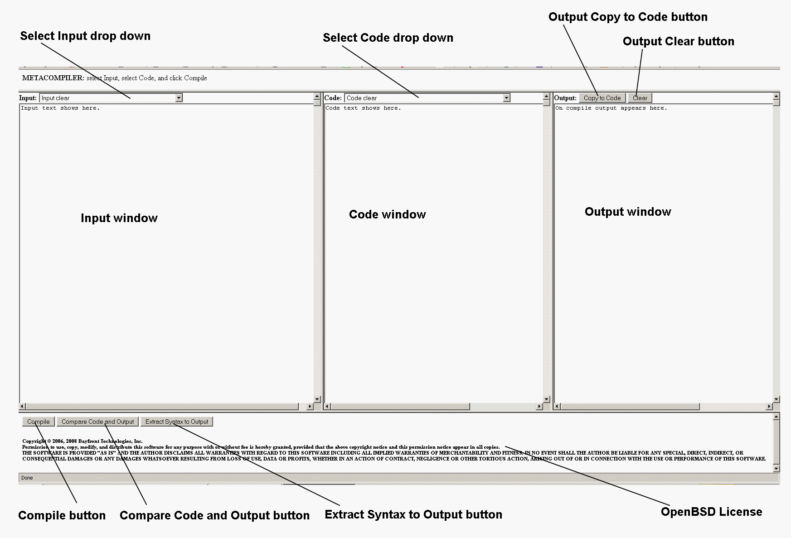
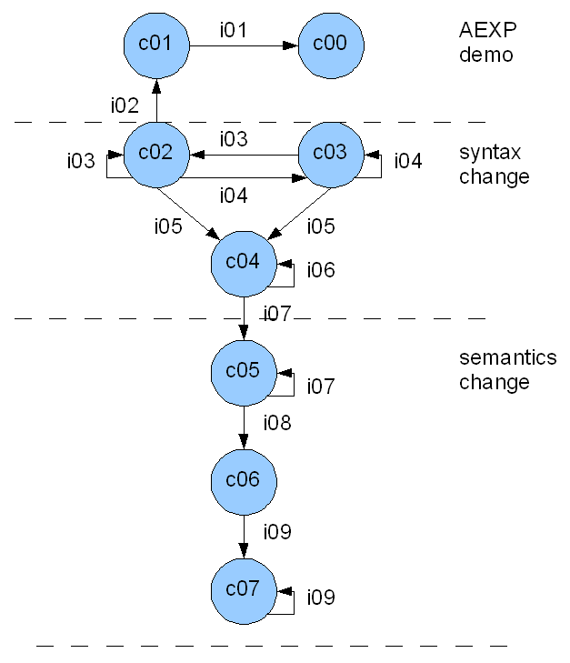
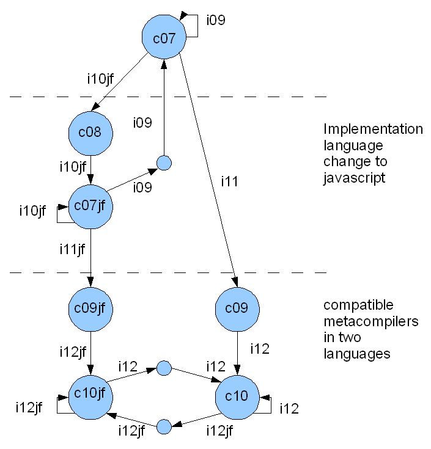
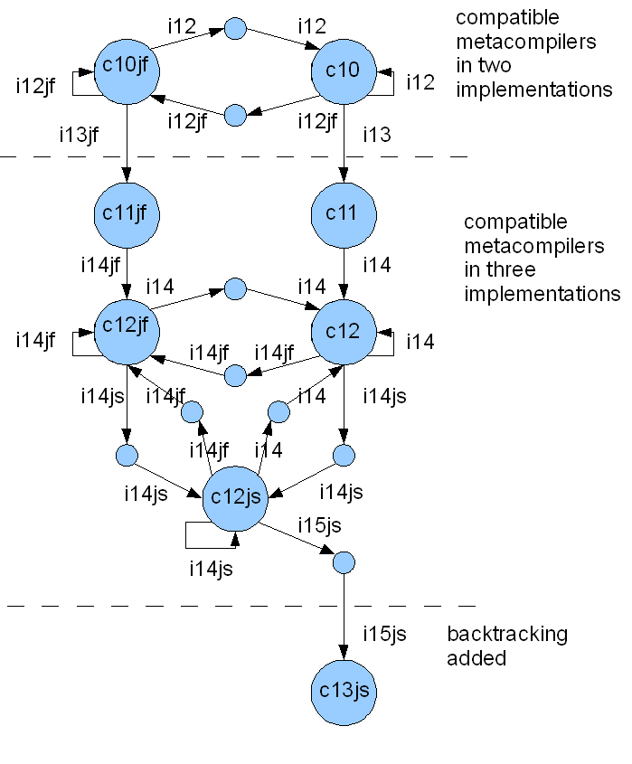

Tutorial: Metacompilers Part 1
James M. Neighbors
James.Neighbors@BayfrontTechnologies.com
Bayfront Technologies, Inc.
August 20, 2008
 Tutorial in PDF
Tutorial in PDF
Table of Contents
Step 1. Where are we going with this tutorial?
You are going to make a compiler right here on these web pages. Yes - no kidding.
In fact you are going to make a lot of compilers - and it's all going to be easy.
No Ajax, Active X, DLLs, SOs, ASP, CGI, Java,
plugins, modules, XML, cookies, PHP, Perl, Python, magic shell operations, world wide standard du jour, or
intergalactic domination plans are necessary - just plain JavaScript in frames.
Also you will be able to move the compiler you build off these web pages and
into your programming language of choice by cutting and pasting.
After all a compiler is just a program that reads text and writes text or binary.
Most general purpose programming languages are capable of doing that.
Step 1.1 Background and History
Programming languages above the level of individual machine assembly languages were
introduced in the 1950s. The idea was to be able to write programs independent
of any particular machine. It seems an obvious notion now, but was a big innovation then.
Following IBM's FORTRAN in 1954 the first widely discussed academic language was ALGOL 60 from 1960.
This set off a flurry of interest in how a compiler for ALGOL 60 could be made and
then easily ported to all the wildly different machine assembly languages of the time.
One proposed method was META II that was published by D.V. Schorre in the 1964 ACM National Conference.
Below are the reference, link, and abstract of the 1964 META II paper [Schorre64].
META II: A Syntax-Oriented Compiler Writing Language.
Schorre, D. V.
In Proceedings of the 1964 19th ACM National Conference,
ACM Press, New York, NY, 41.301-41.3011, 1964.
available as http://doi.acm.org/10.1145/800257.808896
Abstract:
Meta II is a compiler writing language which consists of syntax equations resembling Backus normal form
and into which instructions to output assembly language commands are inserted.
Compilers have been written in this language for VALGOL I and VALGOL II. The former is a simple
algebraic language designed for the purpose of illustrating META II. The latter contains a fairly
large subset of ALGOL 60.
The method of writing compilers which is given in detail in the paper may be explained briefly as follows.
Each syntax equation is translated into a recursive subroutine which tests the input string for a particular
phrase structure, and deletes it if found. Backup is avoided by the extensive use of factoring in the syntax
equations. For each source language, an interpreter is written and programs are compiled into that interpretive
language.
META II is not intended as a standard language which everyone will use to write compilers. Rather, it is an
example of a simple working language which can give one a good start in designing a compiler-writing compiler
suited to his own needs. Indeed, the META II compiler is written in its own language, thus lending itself to
modification.
Step 1.2 What's so special about META II?
Why should anyone spend time learning something from 1964? Can it possibly be of any use over 40 years later?
The very short answer is - yes. The above abstract talks about compiling ALGOL 60 - not exactly today's problem.
Instead how would you like to be able to dynamically generate a custom XML parser from a dynamic XML document definition
and run it in JavaScript on an XML instance on the client side before POSTING the content to the server? This is the same
problem - dynamic generation of a compiler as an interpreter from a metadefinitional form.
META II can help with this problem. Its clear ideas are as fresh and useful today as they were in 1964.
You won't really find metacompilers like META II in compiler textbooks as they are primarily concerned
with slaying the dragons of the 1960s using 1970s formal theory.
The only problem with this formal theory work is that it is not simple. You might
look in a compiler text for a simple parsing and end up wading through a proof about the correctness of LALR tables. META II is
simple and elegant - and sometimes that works. I've used it many times over the years and it's an
important tool in my bag of tricks. I've given META II versions to friends and we've made important commercial
products with it. I used its concepts in my 1980
Ph.D. dissertation as part of
the theory of domain analysis.
I used its metadefinitional concepts in my 2002 paper
"Techniques for Generating Communicating Systems"
I'm not alone as an admirer of META II. In 1990 when Donald Knuth was asked what helped to crystallize his thinking
about attribute grammars he related the following [Knuth90].
"Many details of those two days (February 4-5, 1967) still
remain fresh in my mind. ... Peter [Wegner] asked me what I thought about formal semantics, and I said I liked Iron's
idea of synthesizing an overall meaning from submeanings. I also said that I liked the
way other people had combined Irons's approach with a top-down or "recursive-descent"
parser; Irons had used a more complex parsing scheme. In particular, I was impressed
by the metacompiler of Val Schorre [Schorre64] and by the more powerful (though less elegant)
"transmogrifier" of Bob McClure [McClure65]."
Later in this same article Knuth goes on to discuss how the use of recursive-descent parsers prompted him to examine
class of LL(k) parsers. After a decade of formal analysis what the 1964 META II does is generate top-down recursive-descent
parsers with Wirth-Weber code ejection. I have the feeling this description would bring a smile to the
faces of the crew around the UCLA Computing Facility where Val Schorre worked in 1964.
One reason to smile is that it recognizes their important contribution to theory.
Another reason to smile is that long-winded definition is too complex and obtuse.
Ironically as a definition it is essentially obsolete because
it doesn't really capture the idea of what a metacompiler is or how it was achieved in META II.
META II can reproduce its own code from a description. After working with these systems for
over 35 years I still find that amazing! I hope you will find it amazing too.
Step 1.3 The Metacompiler Workshop
The Metacompiler Workshop is a webpage that can build compilers.
It uses only JavaScript in frames.
If you wish to check the validity of this statement for yourself, please skip to Step 16 where
we provide links to the Metacompiler Workshop webpage sources.
When you open the Metacompiler Workshop some browsers may need an OK to run JavaScript.
Please open the Metacompiler Workshop webpage under a new browser tab or window.
It has been tested with Microsoft Internet Explorer 7 and Mozilla Firefox 2.
Its HTML source has been validated by W3C Validator
as "Valid HTML 4.01 Transitional" in a "Valid HTML 4.01 Frameset" (see Step 16 for details).
Alternatively you may download mc_tutorial.zip
containing all the files needed to use this tutorial and the Metacompiler Workshop offline.
Just unzip the all the files into a directory.
Most of the steps of this tutorial will involve working with the workshop.
The workshop consists of three text boxes:
-
Input provides the text input to the compiler. There is a drop down selection for the
texts used in the META II paper and the many extensions on these pages. Feel free to edit the Input window text by keystroke or
cut-and-paste.
-
Code provides the pseudo assembly language presented in the META II paper and later JavaScript extensions. We will discuss the
meaning of this language later. There is a drop down selection for the codes used in the META II paper
and on these pages. You may also edit the Code window text.
-
Output is the output of the last compile. There are two output-related buttons: "Copy to Code" and "Clear".
"Copy to Code" is used if the output is a new compiler you wish to test. As with all the other windows
you may edit the text of the Output window.
At the bottom of the window are three buttons "Compile", "Compare Code and Output", and "Extract Syntax to Output".
The "Compile" button
runs the code in the Code window on the Input window contents and places any output in
the Output window.
The "Compare Code and Output" button compares the text in the Code and Output windows and displays the first difference.
The "Extract Syntax to Output" button will be discussed later in Step 2.

Step 2. Compiling arithmetic statements
In this step we present a small demonstration compiler.
The goal of this step is to get you comfortable with the operation of the workshop. The demonstration
compiler is AEXP which just compiles arithmetic assignment statements.
In Step 3 we will show you how to build AEXP.
Step 2.1 Enough talking let's see it do something!
- Select Input i01. demo, AEXP example assignments
- Select Code c01. demo, AEXP assignments compiler c[i02,c02]
- Click the "Compile" button in the lower left corner
Depending on your browser you may see the output appear one line at a time.
If the compile finishes without error, you will see a confirm dialog box that says "Done.". If the compile
encounters an error, you will see an alert dialog box with error information before the final "Done." confirm dialog box.
If all goes well the table below shows the compiling transformation from the Input to the Output.
| Input | Output |
|---|
fern:=5+6;
ace:=fern*5;
waldo:=fern+alpha/-beta^gamma;
|
address fern
literal 5
literal 6
add
store
address ace
load fern
literal 5
mpy
store
address waldo
load fern
load alpha
load beta
minus
load gamma
exp
div
add
store
|
The output language is a made-up example language that computes arithmetic expressions using a stack.
Examine the output from this little arithmetic expression compiler carefully.
It knows an awful lot about its operators. As an example it knows that division is higher precedence than addition
(i.e., A+B/C is A+(B/C) rather
than (A+B)/C)).
It knows that exponentiation is right associative (i.e., A^B^C is A^(B^C) rather
than (A^B)^C) and that addition is left associative
(i.e., A+B+C is calculated (A+B)+C rather than A+(B+C)). It knows that the unary operator minus
is higher precedence than exponentiation (i.e., -A^B^C is (-A)^(B^C)). Pretty sophisticated stuff precedence
with left-right associative parsing to code generation.
You can prove these statements to yourself by cutting these expressions out of these sentences and pasting them into the Input window
and clicking "Compile" again. (e.g., fern:=A+B/C;)
Step 2.2 Checking the output
Repeating some of the above steps demonstrates the function of the "Compare Code and Output" button.
- Select Input "Input Clear"
- Select Input "i01. demo, AEXP example assignments"
- Select Code "c01. demo, AEXP assignments compiler c[i02,c02]"
- Click the "Compile" button in the lower left corner
- Select Code "c00. demo, compiled assignments c[i01,c01]"
- Click the "Compare Code and Output" button in the lower left corner
The comparison should indicate that the Input and Output window contain the same text. You can see what the comparison does
when they are not the same by editing either one of them.
Notice that the notation c[i01,c01] on the second code selection above means that the code resulted from
compiling Input i01 with Code c01.
Step 2.3 Really - make sure we aren't lying
Repeating some of the above steps demonstrates what happens when a compile fails.
- Select Input "Input Clear"
- Select Input "i01. demo, AEXP example assignments"
- Select Code "c01. demo, AEXP assignments compiler c[i02,c02]"
- Click the "Compile" button in the lower left corner
Now just start changing things.
- Change the name of one of the Input variables and click Compile to prove that
we are actually compiling the contents of the Input window.
- Change the name of one of the Code constants (e.g.,
'store' into 'save' or something)
in the Code window and click Compile. (Yes you can edit the Code window and it is the code we run when Compile is clicked.
If you create an infinite loop you will have to close and restart the browser.)
- Try editing the Input and clicking "Compile" until you receive the error notification alert box.
The last line in the alert box tells you where the compiler was scanning when it encountered the error by
inserting a
<scan> marker into the erroneous input line.
Step 3. Example AEXP compiler
All compilers must deal with two languages: the input language it compiles from (syntax) and
the output language it compiles to (code).
- Select Input "i02. demo, AEXP example assignment compiler"
- Click the "Extract Syntax to Output" button in the lower left corner
This should result in the following windows.
| Input | Output ("Extract Syntax to Output") |
|---|
.SYNTAX AEXP
AEXP = AS $AS .,
AS = .ID .OUT('address ' *) ':=' EX1 .OUT('store') ';' .,
EX1 = EX2 $('+' EX2 .OUT('add') /
'-' EX2 .OUT('sub') ) .,
EX2 = EX3 $('*' EX3 .OUT('mpy') /
'/' EX3 .OUT('div') ) .,
EX3 = EX4 $('^' EX3 .OUT('exp')) .,
EX4 = '+' EX5 / '-' EX5 .OUT('minus') / EX5 .,
EX5 = .ID .OUT('load ' *) /
.NUMBER .OUT('literal ' *) /
'(' EX1 ')' .,
.END
|
.SYNTAX AEXP
AEXP = AS $AS ;
AS = .ID ':=' EX1 ';' ;
EX1 = EX2 $( '+' EX2 / '-' EX2 ) ;
EX2 = EX3 $( '*' EX3 / '/' EX3 ) ;
EX3 = EX4 $( '^' EX3 ) ;
EX4 = '+' EX5 / '-' EX5 / EX5 ;
EX5 = .ID / .NUMBER / '(' EX1 ')' ;
.END
|
A META II Compiler of Arithmetic Statements to Stack Code
The Input above is a META II compiler description of the arithmetic statement compiler.
All of that sophisticated precedence and associative parsing is contained in this 15 line description.
This same description would have compiled and run in 1964 by the original META II (except perhaps for the lower case).
The Output resulting from the "Extract Syntax to Output" button operating on the Input separates the syntax or input language
the compiler compiles from the output code language such as "add" in this case.
Step 3.1 Understanding syntax
In the above table the syntax or input language description has been separated from the complete compiler description into the
Output window. The discussion of this section considers just that Output window. As Schorre states in his abstract these are
"syntax equations resembling Backus normal form".
The syntax description starts with a .SYNTAX statement that provides the initial rule
(AEXP in this case) that is followed by a series of named syntax rules and ends with a .END statement.
Each syntax rule starts with a name followed by a "=" followed by a series of recognition constructs and ends with a ".," or ";".
Since this is syntax-directed compiling the constructs are concerned with successfully recognizing input or not.
Recognizing a bit of input is thought of as being either successful or unsuccessful.
As parts of the input are successfully recognized, they are skipped over in the input string.
Whitespace consisting of blanks, tabs, and line controls (e.g., carriage return and line feed)
separates the recognized syntax constructs in the input.
| Construct | Meaning | Concept Name |
|---|
.ID | recognize an identifier | token |
.NUMBER | recognize a number | token |
.STRING | recognize any string in single quotes | token |
| string in single quotes | recognize the given string | literal string |
| rule name | recognize the given syntax rule | invocation |
A / B | recognize A or B | alternation (OR) |
A B | recognize A and B | sequence (AND) |
.EMPTY | recognize nothing, always succeed | option (NOT) |
$A | repeat A until not recognized | iteration |
(A B) | group recognition constructs | precedence |
Meta II Syntax Constructs
Choices and control constructs are given by a (A1 A2 ... An / B1 B2 ... Bn) syntax. If A1 is successful, then A2 through An
if present must be successful or an error occurs. If A1 succeeds, then the B alternatives are not attempted. If A1 is not successful, then
B1 is attempted. If B1 is successful, then B2 through Bn if present must be successful or an error occurs.
If both A1 and B1 are unsuccessful, then the entire grouped construct is unsuccessful. Notice there are two grammar operators here:
alternation (an OR choice) delimited by / and sequence (an AND choice) delimited by blanks.
The construct .EMPTY doesn't try to recognize anything and always succeeds. It is useful in cases such as
(A / .EMPTY) where even if A fails, then the entire grouped construct succeeds.
In essence this indicates the syntax A as being optional.
.EMPTY is built-in to recognize the absence (a NOT choice) of an optional syntax.
The .EMPTY construct is not used in the AEXP compiler presented above as there
is no optional syntax.
Step 3.2 Understanding output code
In this section we will be concerned with the complete AEXP compiler description from the Input window shown above.
As Schorre states in his abstract this complete compiler description
"consists of syntax equations resembling Backus normal form and into
which instructions to output assembly language commands are inserted".
As can be seen in the above Output window, the syntax is basically the complete compiler description with the
.OUT and .LABEL
code generating constructs removed. In MetaII syntax-directed compiling the code generation constructs are
embedded in the control of the syntax recognition constructs. This means for control reasons code constructs
shown in the following table must mimic a syntax construct.
As syntax constructs all code constructs don't try to recognize anything and always succeed.
| Construct | Meaning | Concept Name |
|---|
.OUT() | output a text line | format control |
.OUT('string') | output a literal string w/o quotes | literal output |
.OUT(*) | output last recognized token | token output |
.OUT(*1) | output generated number 1 | generated label |
.OUT(*2) | output generated number 2 | generated label |
.LABEL 'string' | output a literal string w/o quotes at left margin | literal output |
.LABEL * | output last recognized token at left margin | token output |
.LABEL *1 | output generated number 1 at left margin | generated label |
.LABEL *2 | output generated number 2 at left margin | generated label |
Meta II Code Constructs
.OUT(*) and .LABEL * means output
the last recognized token (i.e., input last recognized by
a .ID, .NUMBER, or .STRING syntax construct).
The basic idea of the output of code is single text line at a time.
All of the code constructs shown with .OUT above may be combined into a single .OUT().
The .LABEL constructs cannot be combined.
Each .OUT() and .LABEL corresponds to one output line.
Each .OUT() produces output on a new line indented to assembly op code position.
Each .LABEL produces output at the left margin the assembly language label position.
These output conventions correspond to
assembly language formatted output where labels are against the left margin and operation codes are indented.
Meta II was built in 1964 to generate assembly language output.
Later we will expand these output choices to include the modern block structured languages
while maintaining the ability to output assembly languages.
Step 3.3 Building the AEXP compiler
Let's build this compiler.
- Select Input "i02. demo, AEXP example assignment compiler"
- Select Code "c02. Meta II of fig. 5, c[i03,c02]"
- Click the "Compile" button in the lower left corner
The Output contains META II pseudo code for the assignment statement compiler.
Congratulations - you just made a compiler. OK, it's small - but we're only on step 3.
Let's test this newly created compiler.
- Click the "Copy to Code" button at the top of the Output window
- Select Input "i01. demo, AEXP example assignments"
- Click the "Compile" button in the lower left corner
- Select Code "c00. demo, compiled assignments c[i01,c01]"
- Click the "Compare Code and Output" button in the lower left corner
This is testing the output of the compiler. Similarly you could have tested the code equivalence of the compiler as below.
- Select Input "i02. demo, AEXP example assignment compiler"
- Select Code "c02. Meta II of fig. 5, c[i03,c02]"
- Click the "Compile" button in the lower left corner
- Select Code "c01. demo, AEXP assignments compiler c[i02,c02]"
- Click the "Compare Code and Output" button in the lower left corner
In general it is impossible to tell if two different programs perform the same function.
However two programs with the exact same text do perform the same function.
This is the program equivalence we are testing above.
Step 4. META II metacompiler
OK, I'm warning you right here - this step gets confusing.
META II is a metacompiler which means a bit more than it can compile itself.
Many, say, Pascal compilers are written in Pascal and can compile themselves - but they are not metacompilers.
This is where we lose a lot of compiler theory textbooks.
A compiler generator supports a high-level domain-specific input language that
describes the compiler to be built that is independent of
the implementation language of the compiler generator. For META II you've already seen it - the description in step 2
of the arithmetic statement compiler is a statement in META II's domain-specific language aimed at describing compilers.
Not all compiler generators are metacompilers.
A metacompiler is a compiler generator that is capable of reproducing itself from a high-level description.
We are going to see this actually happen in this step. That should make this high-level discussion much more concrete.
Just as we can characterize the syntax of assignment statements, we can characterize the syntax of syntax statements.
I told you it was confusing.
The statement of META IIs Input formatted exactly from figure 5 of [Schorre64] is shown below.
Don't worry about all the details right now. Only the basic syntax scheme, built-in syntax recognizers and control constructs should
look familiar here. It's the same as the assignment compiler - just a bit bigger.
- Select Input "i03. Meta II syntax (paper fig. 5)"
- Click the "Extract Syntax to Output" button in the lower left corner
This should result in the following windows with perhaps different linebreaks.
| Input | Output ("Extract Syntax to Output") |
|---|
.SYNTAX PROGRAM
OUT1 = '*1' .OUT('GN1') / '*2' .OUT('GN2') /
'*' .OUT('CI') / .STRING .OUT('CL '*).,
OUTPUT = ('.OUT' '('$OUT1 ')' /
'.LABEL' .OUT('LB') OUT1)
.OUT('OUT') .,
EX3 = .ID .OUT('CLL '*) / .STRING
.OUT('TST '*) / '.ID' .OUT('ID') /
'.NUMBER' .OUT('NUM') /
'.STRING' .OUT('SR') / '(' EX1 ')' /
'.EMPTY' .OUT('SET') /
'$' .LABEL *1 EX3
.OUT('BT ' *1) .OUT('SET').,
EX2 = (EX3 .OUT('BF ' *1) / OUTPUT)
$(EX3 .OUT('BE') / OUTPUT)
.LABEL *1 .,
EX1 = EX2 $('/' .OUT('BT ' *1) EX2 )
.LABEL *1 .,
ST = .ID .LABEL * '=' EX1
'.,' .OUT('R').,
PROGRAM = '.SYNTAX' .ID .OUT('ADR ' *)
$ ST '.END' .OUT('END').,
.END
|
.SYNTAX PROGRAM
OUT1 = '*1' / '*2' / '*' / .STRING ;
OUTPUT = ( '.OUT' '(' $OUT1 ')' /
'.LABEL' OUT1 ) ;
EX3 = .ID / .STRING / '.ID' /
'.NUMBER' / '.STRING' /
'(' EX1 ')' / '.EMPTY' /
'$' EX3 ;
EX2 = ( EX3 / OUTPUT )
$( EX3 / OUTPUT ) ;
EX1 = EX2 $( '/' EX2 ) ;
ST = .ID '=' EX1 '.,' ;
PROGRAM = '.SYNTAX' .ID $ST '.END' ;
.END
|
The META II Compiler Written in it's Own Language
(Input is figure 5 of [Schorre64])
So lets see some of this metacompiling stuff actually happen. Let's go back to building compilers.
- Select Input "i03. Meta II syntax (paper fig. 5)"
- Select Code "c02. Meta II of fig. 5, m[i03,c02]"
- Click the "Compile" button in the lower left corner. This may take a while, so wait for the "Done.".
- Click the "Compare Code and Output" button in the lower left corner
So what just happened? Meta II's code reproduced itself from the high-level domain-specific input description of itself in the input window.
It can do it over and over again by following the following steps.
- Click the Output "Copy to Code" button and Output "Clear" button
- Click the "Compile" button in the lower left corner. This may take a while, so wait for the "Done.".
- Click the "Compare Code and Output" button in the lower left corner
Please take a moment to realize how amazing this is. The 29 line complex domain-specific input is compiled into 210 lines of pseudo assembly language
output by the same 210 lines of low-level looking pseudo assembly language.
We will learn why this is something other than just a slick trick when we begin to change the compiler in the following
sections. It's much easier to modify a concise high-level domain-specific description than modify an implementation
full of implementation details unrelated to the problem domain (i.e., compiling in this case).
The "c02. Meta II of fig. 5, m[i03,c02]" Code select above is denoted by
m[i03,c02] rather than the more general compiler notation c[i03,c02] to indicate that this combination generates a metacompiler a special subset of compilers.
Also notice META II description uses code pseudo assembly operators
such as ADR, TST, BF, CL found in the code generating .OUT statements. We will discuss in detail what these
operators do in the next step.
Step 5. META II in detail
Because the syntax rules of the META II description are independent we may reformat them any way we wish.
Below are the rules of figure 5 of the META II paper shown above reorganized with some formatting to make them a bit more
easy to read. This form is top-down where syntax rule definitions are used before defined
rather than bottom-up where syntax rules are defined before use.
In this form it's easier to see how this description compiles itself.
Step 5.1 META II compiling itself
The first line of the
description .SYNTAX PROGRAM specifies PROGRAM as the first rule of a META II
description. The first thing the PROGRAM rule does is look for the literal string '.SYNTAX'
(without the quotes) followed by a .ID, an identifier.
In the case of the input below the PROGRAM rule finds
the PROGRAM identifier after the .SYNTAX. So for this input description the
first line output by the PROGRAM rule from it's code generation construct .OUT('ADR ' *) should
be ADR PROGRAM. Knowing that
.LABEL * outputs the most recently recognized identifier, number, or string against the
left margin, can you guess what the second and third lines of output are? By the way - this is very hard.
- Select Input "i04. Meta II syntax (i03 reordered)"
- Click the "Extract Syntax to Output" button in the lower left corner
This should result in the following windows - again with perhaps different linebreaks.
| Input | Output ("Extract Syntax to Output") |
|---|
.SYNTAX PROGRAM
PROGRAM = '.SYNTAX' .ID .OUT('ADR ' *)
$ ST
'.END' .OUT('END') .,
ST = .ID .LABEL * '=' EX1 '.,' .OUT('R') .,
EX1 = EX2 $('/' .OUT('BT ' *1) EX2 )
.LABEL *1 .,
EX2 = (EX3 .OUT('BF ' *1) / OUTPUT)
$(EX3 .OUT('BE') / OUTPUT)
.LABEL *1 .,
EX3 = .ID .OUT('CLL '*) /
.STRING .OUT('TST '*) /
'.ID' .OUT('ID') /
'.NUMBER' .OUT('NUM') /
'.STRING' .OUT('SR') /
'(' EX1 ')' /
'.EMPTY' .OUT('SET') /
'$' .LABEL *1 EX3 .OUT('BT ' *1)
.OUT('SET') .,
OUTPUT = ('.OUT' '('$OUT1 ')' /
'.LABEL' .OUT('LB') OUT1)
.OUT('OUT') .,
OUT1 = '*1' .OUT('GN1') /
'*2' .OUT('GN2') /
'*' .OUT('CI') /
.STRING .OUT('CL '*) .,
.END
|
.SYNTAX PROGRAM
PROGRAM = '.SYNTAX' .ID $ST '.END' ;
ST = .ID '=' EX1 '.,' ;
EX1 = EX2 $( '/' EX2 ) ;
EX2 = ( EX3 / OUTPUT )
$( EX3 / OUTPUT ) ;
EX3 = .ID / .STRING / '.ID' /
'.NUMBER' / '.STRING' /
'(' EX1 ')' / '.EMPTY' /
'$' EX3 ;
OUTPUT = ( '.OUT' '(' $OUT1 ')' /
'.LABEL' OUT1 ) ;
OUT1 = '*1' / '*2' / '*' / .STRING ;
.END
|
The META II Compiler Written in it's Own Language
(Input is Top-Down version of figure 5 of [Schorre64])
Let's compile the above description using the original META II and find out if you figured out the second and third lines of output.
- Select the Input "i04. Meta II syntax (i03 reordered)"
- Select Code "c02. Meta II of fig. 5, m[i03,c02]"
- Click the "Compile" button in the lower left corner and wait for the "Done.".
- Check your guesses for the second and third output lines using the Output window
The second line of output is PROGRAM as a label against the left margin.
It is output by the rule ST when the .ID construct recognizes the identifier PROGRAM
at the beginning of the input line PROGRAM = '.SYNTAX' .ID .OUT('ADR ' *) and the rule ST
code construct .LABEL * caused the recognized identifier to be output against the left margin.
The third line of output is TST '.SYNTAX' not against the left margin.
It is output by the rule EX3 as follows.
After the rule ST recognizes the .ID identifier PROGRAM (as above)
and removed it from the input leaving = '.SYNTAX' .ID .OUT('ADR ' *) remaining on the input line.
The rule ST then recognizes the literal string '=' and removes it from the input leaving
'.SYNTAX' .ID .OUT('ADR ' *) as the input line.
Next the rule ST invokes the rule EX1 which invokes the rule EX2
which invokes the rule EX3 which first tests the input line for .ID, an identifier.
When no identifier is found the rule EX3 then tests for .STRING, a string in quotes.
The rule EX3 does find the string '.SYNTAX' at the beginning of the input line. It
removes it from the input leaving .ID .OUT('ADR ' *) as the input line.
The rule EX3 recognition of the .STRING causes the output of the line TST '.SYNTAX'.
The Output of Meta II compiling the .SYNTAX header and PROGRAM the first syntax rule is shown below.
| Input | Output ("Compile") |
|---|
.SYNTAX PROGRAM
PROGRAM = '.SYNTAX' .ID .OUT('ADR ' *)
$ ST
'.END' .OUT('END') .,
|
ADR PROGRAM
PROGRAM
TST '.SYNTAX'
BF L1
ID
BE
CL 'ADR '
CI
OUT
L2
CLL ST
BT L2
SET
BE
TST '.END'
BE
CL 'END'
OUT
L1
L3
R
|
META II Compiler Output for the PROGRAM Syntax Rule
Hopefully you can now look at the META II compiler description above and recognize that the construct .OUT(*1) will turn into
an invocation of the GN1 META II pseudo assembly language operator. But what do these pseudo assembly language operations mean?
We will look at that in the next step.
Step 5.2 META II order codes
Below is a list of
all of the operators of the META II parsing machine as given in [Schorre64].
These are called order codes just as the assembly
language operations of a computer of that era were called. This is the language that appears in the Code window.
These are the op codes of the META II virtual machine.
These are the objects and operations of the domain of META II compiling.
They are complete in themselves.
To move Meta II to a different language these and only these are the objects and operations
that must be implemented in the target language.
META II Order Codes (following figures 6.1 and 6.2 of [Schorre64])
| Mnemonic | Purpose | Actions |
|---|
| TST 'string' | Test for string in input | After skipping initial whitespace in the input string
compare it to the string given as argument. If the comparison is met, skip over the string in the input
and set switch. If not met, reset switch. |
| ID | Identifier token | After skipping initial whitespace in the input string,
test if it begins with an identifier, i.e., a letter followed by a sequence of letters and/or digits.
If so, copy the identifier to the token buffer; skip over it in the input; and set switch. If not, reset switch. |
| NUM | Number token | After deleting initial whitespace in the input string,
test if it begins with an number, i.e., a sequence of digits.
If so, copy the number to the token buffer; skip over it in the input; and set switch. If not, reset switch. |
| SR | String token | After deleting initial whitespace in the input string,
test if it begins with an string, i.e., a single quote followed by a sequence of any characters
other than a single quote followed by another single quote.
If so, copy the string (including enclosing quotes) to the token buffer; skip over it in the input; and set switch.
If not, reset switch. |
| CLL AAA | Call subroutine | Enter the subroutine beginning at label AAA.
Push a stackframe of three cells on the stack containing:
- label 1 cell, initialized to blank
- label 2 cell, initialized to blank
- location cell, set to the return from call location
|
| R | Return from subroutine | Return from CLL call to location on the top of the stack and pop
the stackframe of three cells. |
| SET | Set switch | Set the switch to true. |
| B AAA | Unconditional branch | Branch unconditionally to the label AAA. |
| BT AAA | Branch if true | If the switch is true, branch to label AAA. |
| BF AAA | Branch if false | If the switch is false, branch to label AAA. |
| BE | Branch to error if false | If the switch is false, report error status and halt. |
| CL 'string' | Copy literal | Copy the variable length string (without enclosing quotes) given as
argument to the output buffer. |
| CI | Copy input | Copy the token buffer to the output buffer. |
| GN1 | Generate label 1 | If the label 1 cell in the top stackframe is blank, then generate a unique label
and save it in the label 1 cell. In either case output the label. |
| GN2 | Generate label 2 | Same as for GN1 except acting on the label 2 cell. |
| LB | Move to label field | Set the output buffer column to the first column. |
| OUT | Output record | Output the output buffer with line terminator; clear it;
and set the output buffer column to the eighth column. |
META II Pseudo Operations (following figure 6.3 of [Schorre64])
| Mnemonic | Purpose | Actions |
|---|
| ADR AAA | Starting location | Pseudo operation that specifies the starting label to call. |
| END | End of source | Pseudo operation that specifies the end of input. |
As mentioned before the above order codes are all you need to implement in your favorite language to port the META II metacompiler.
None of them are very hard to implement.
Of course you will also need the translation of the META II compiler itself into the syntax of your favorite
language to call your order codes. We will do an example which translates the
META II compiler into JavaScript and JavaScript objects later.
At the end of these steps you should be able to:
- Define a compiler description that ejects your favorite language code
- Paste it into the Input window
- Have one of the compilers on these web pages generate the translation
to your favorite language
- Cut the code generated in your favorite language from the Output window
- Continue compiler and metacompiler development in your favorite language
Step 5.3 "Stepping stone" compilers between metacompilers
Is the compiler we described above by reordering the rules of META II a metacompiler?
We can answer that question using the following steps.
- Select the Input "i04. Meta II syntax (i03 reordered)"
- Select Code "c02. Meta II of fig. 5, m[i03,c02]"
- Click the "Compile" button in the lower left corner and wait for the "Done.".
- Click the "Compare Code and Output" button in the lower left corner.
The Code and Output do not compare - so c[i04,c02] generated above is not a metacompiler by our textual comparison definition.
The Code and Output do not compare because the syntax rules are generated into the output in order - and the rule order between
the bottom-up i03 description which generated c02 and the top-down i04 description is different.
- Click the Output "Copy to Code" button and Output "Clear" button
- Click the "Compile" button in the lower left corner and wait for the "Done.".
- Click the "Compare Code and Output" button in the lower left corner. It does compare - so it is a metacompiler.
- Select Code "c03. Meta II reordered, c[i04,c02], m[i04,c03]"
- Click the "Compare Code and Output" button in the lower left corner.
It does compare - proving our new metacompiler has been named c03
In the steps above we created the plain compiler c[i04,c02] as a stepping stone
in going from the metacompiler m[i03,c02] to the metacompiler m[i04,c03].
The steps above verified the first of the following two true equalities.
Can you verify the second?
- c03 = m[i04,c03] = c[i04,c02] = c[i04,m[i03,c02]]
- c02 = m[i03,c02] = c[i03,c03] = c[i03,m[i04,c03]]
This is the basic technique for enhancing a metacompiler.
Admittedly in this case there is no real enhancement but we will show a true enhancement in the next section.
Step 6. Making a syntax change
Until now we really haven't extended the original META II. The compiler description i04 in the previous step
is simply a reformatting and reorganization of i03 from figure 5 of the META II paper. In this step we are going
to extend the original META II syntax in a simple way by changing the syntax rule terminator from
., to the more familiar ; used in many languages.
To get a feel for extending the metacompiler syntax let's do something simple. To change the rule terminator
from ., to the more familiar ; used in many languages requires a single change
of the i04 ST rule from
ST = .ID .LABEL * '=' EX1 '.,' .OUT('R').,
to
ST = .ID .LABEL * '=' EX1 ';' .OUT('R').,
Notice that we can't change the ., terminating the changed line to a semicolon because the
current metacompiler c03 of the previous step doesn't understand semicolons as a line terminator yet.
The above i04 change has been made as i05. Lets build this compiler.
- Select the Input "i05. add semicolon line end"
- Select Code "c03. Meta II reordered, c[i04,c02], m[i04,c03]"
- Click the "Compile" button in the lower left corner and wait for the "Done.".
What do you think? Is c[i05,c03] the resulting compiler a metacompiler? The output looks similar. Lets check in the usual way following the above steps.
- Click the "Compare Code and Output" button in the lower left corner.
The Code and Output do not compare - so c[i05,c03] generated above is not a metacompiler.
The Code and Output do not compare because the Output c[i05,c03] compiler from i05 is looking
for
; terminated syntax rules
while the c03 compiler is looking for ., terminated syntax rules.
Well perhaps, as with the previous step, c[i05,c03] is a stepping stone compiler. Let's check that.
- Click the Output "Copy to Code" button and Output "Clear" button
- Click the "Compile" button in the lower left corner and wait for the "Done.".
- The above compile of c[i05,c[i05,c03]] fails with a syntax error where the
error
<scan> marker points to the ., at the end
of the initial PROGRAM rule because this new compiler only accepts semicolons
at the end of rule descriptions. c[i05,c03] is looking for ; terminated syntax rules
while the i05 input contains ., terminated syntax rules.
So it looks like a modification of the syntax requires both a stepping stone compiler and
an updated syntax to drive it. The c[i05,c03] compiler above is looking for ; terminators.
We just need an updated syntax to drive it.
The Input i06 is i05 with all of the syntax rule terminators changed to ;.
- Select the Input "i06. use semicolon line end"
- Click the "Compile" button in the lower left corner and wait for the "Done.".
- Click the "Compare Code and Output" button in the lower left corner. It does compare - so it is a metacompiler.
- Select Code "c04. Meta II semicolons, c[i05,c03], m[i06,c04]"
- Click the "Compare Code and Output" button in the lower left corner.
It does compare - proving our new metacompiler has been named c04
In the steps above we changed the metacompiler syntax by:
- Making i05 from i04 that recognizes the new syntax for the existing c03 metacompiler.
- Creating the plain compiler c[i05,c03] as a stepping stone.
- Making i06 from i05 that uses the defined syntax.
- Validating that c04 is new expanded metacompiler made as c04 = c[i06,c[i05,c03]]
The steps above verified the following equality.
- c04 = m[i06,c04] = c[i05,c03] = c[i05,m[i04,c03]]
This is the basic technique for changing the syntax.
Step 7. Making an output semantics change
In this step we are going to change what the metacompiler
actually does - it's operational semantics. We are going to change how Meta II formats output.
Step 7.0 Format semantics requirements
To specify these new semantics we first have to understand how the original META II provided output.
In 1964 the idea of higher level languages (e.g., C and Java) was less than 10 years old. Much of
Computer Science was focussed on how to compile ALGOL 60 to the assembly languages of a very wide
variety of computers. The original META II output operators reflect this focus on assembly language.
This represents the scope of the perceived META II domain in 1964.
The META II .OUT() construct uses its arguments to output one assembly language line starting at the op
code field. The META II .LABEL construct uses its single argument to output one assembly language line starting
at the label field. In both cases labels were either a literal string, a scanned identifier, or a label generated by the
GN1 or GN2 pseudo operations.
We have to change the above behavior for two reasons. One, we are no longer using only assembly language card
formatting. We need to supply block structure indenting when necessary in addition to assembly language formatting.
Two, we no longer know what form a label (either generated or scanned identifier)
should take in the target language, so we must create
labels in the compiler description. This means we need to be able to splice tokens
to create unique identifiers and labels in the output compilers.
Step 7.1 Define new syntax for format semantics change
To meet these needs we redefine .OUT() and eliminate .LABEL.
This new conceptual definition of .OUT() no longer corresponds
to one output line. Instead .OUT() just provides a list of output producing constructs.
First we have to modify the syntax of i06 to support these new needs
by changing the i06 OUT1 rule
from
OUT1 = '*1' .OUT('GN1') /
'*2' .OUT('GN2') /
'*' .OUT('CI') /
.STRING .OUT('CL '*) .,
to
OUT1 = '*1' .OUT('GN1') /
'*2' .OUT('GN2') /
'*' .OUT('CI') /
.STRING .OUT('CL '*) /
'#' .OUT('GN') /
'.NL' .OUT('NL') /
'.LB' .OUT('LB') /
'.TB' .OUT('TB') /
'.LM+' .OUT('LMI') /
'.LM-' .OUT('LMD') .,
Notice that the new OUT1 rule only adds alternatives. It doesn't remove any. This is important because
we need to be sure the metacompiler can still build itself.
These meaning of these new OUT1 constructs is shown in the table below with their associated pseudo assembly op code.
| .OUT construct | Mnemonic | Purpose | Actions |
|---|
| '#' | GN | unique number | If the label 1 cell in the top stackframe is blank, then generate a unique number
and save it in the label 1 cell. In either case output the label. |
| '.NL' | NL | Newline | Flush output buffer with ending newline and move to left margin. |
| '.LB' | LB | Label field | Move to output column 1. |
| '.TB' | TB | Tab | Move to the next tab stop. |
| '.LM+' | LMI | Left margin increase | Increase the left margin, indenting block. |
| '.LM-' | LMD | Left margin decrease | Decrease the left margin, outdenting block. |
The margin commands '.LM+' and '.LM-' just increment or decrement a margin counter.
The margin itself gets inserted as spaces just before the next string output after a '.NL'.
The margin counter defaults to zero. A negative or zero margin count results in no indenting. The margin
commands in this tutorial add or subtract 2 columns to the margin.
Lets make the metacompiler with the extended OUT1 syntax. How do we know offhand that it will be a metacompiler?
Because we started with i06 the description of c04 = m[i06,c04] a metacompiler and we only extended the syntax without deleting
any as shown above. The extended version of i06 is i07.
Let's compile this compiler.
- Select Input "i07. add new output control"
- Select Code "c04. Meta II semicolons, c[i05,c03], m[i06,c04]"
- Click "Compile"
- Click "Compare Code and Output" It does not compare because c[i07,c04] recognizes the extended syntax.
- Click the Output "Copy to Code" button and Output "Clear" button
- Click "Compile"
- Click "Compare Code and Output" It does compare so c[i07,c[i07,c04]] is a metacompiler.
- Select Code "c05. accept new output, c[i07,c04], m[i07,c05]"
- Click "Compare Code and Output" It does compare so c05 is the name of the new metacompiler.
From the above steps we know the first equality below. You can verify the second. It is because the syntax of i06 is a subset of i07.
- c05 = m[i07,c05] = c[i07,c[i07,c04]]
- c04 = m[i06,c04] = c[i06,c[i06,c05]]
Step 7.2 Remove replaced format syntax and semantics
Since we are using our new constructs, we can eliminate old constructs (and their underlying pseudo assembly operations).
In particular the OUTPUT rule construct .LABEL and the OUT1 rule
constructs *1 and *2 are no longer needed.
Ultimately their underlying pseudo assembly operations LB, GN1,
and GN2 will also not be required.
Below is i08 the complete compiler recognizing the new constructs and not recognizing the old constructs.
Notice that i08 is a stepping stone syntax because it cannot possibly create a metacompiler. As an example it uses the
construct .LABEL but cannot recognize that syntax. The compiler resulting from i08 exists only to eliminate
the older syntax while using the older syntax.
.SYNTAX PROGRAM
PROGRAM = '.SYNTAX' .ID .OUT('ADR ' *)
$ ST
'.END' .OUT('END') ;
ST = .ID .LABEL * '=' EX1 ';' .OUT('R') ;
EX1 = EX2 $('/' .OUT('BT ' *1) EX2 )
.LABEL *1 ;
EX2 = (EX3 .OUT('BF ' *1) / OUTPUT)
$(EX3 .OUT('BE') / OUTPUT)
.LABEL *1 ;
EX3 = .ID .OUT('CLL '*) /
.STRING .OUT('TST '*) /
'.ID' .OUT('ID') /
'.NUMBER' .OUT('NUM') /
'.STRING' .OUT('SR') /
'(' EX1 ')' /
'.EMPTY' .OUT('SET') /
'$' .LABEL *1 EX3 .OUT('BT ' *1) .OUT('SET') ;
OUTPUT = '.OUT' '('$OUT1 ')' ;
OUT1 = '*' .OUT('CI') /
.STRING .OUT('CL '*) /
'#' .OUT('GN') /
'.NL' .OUT('NL') /
'.LB' .OUT('LB') /
'.TB' .OUT('TB') /
'.LM+' .OUT('LMI') /
'.LM-' .OUT('LMD') ;
.END
Let's compile this stepping stone compiler.
- Select Input "i08. delete old output control"
- Select Code "c05. accept new output, c[i07,c04], m[i07,c05]"
- Click "Compile"
- Select Code "c06. reject old output, c[i08,c05]"
- Click "Compare Code and Output" It does compare so c06 is the name of the stepping stone.
So now what? We have a new stepping stone c06 that recognizes the syntax of the
new semantics and can generate the new pseudo ops but we don't have any inputs that
use this new syntax.
Step 7.3 Use the new format semantics
As with the extension of syntax we did previously our extension of semantics and syntax
requires us to rewrite the input to use our new syntax to link to our new semantic pseudo operations.
Using these new constructs we can restate the metacompiler i08. As an example
EX1 = EX2 $('/' .OUT('BT ' *1) EX2 )
.LABEL *1 ;
becomes
EX1 = EX2 $('/' .OUT('BT L'# ) EX2 )
.OUT(.LB 'L'# ) ;
using a compatible new definition. The above example shows the use of # with token splicing to generate unique alpha-numeric label names
and the use of .LB to put to names into the assembly label field.
Below is i09 which is i08 rewritten using our new syntax and semantics.
It uses our new constructs to simulate what META II originally did by default.
Explicit formatting over implicit formatting naturally makes the description a bit more complex.
.SYNTAX PROGRAM
PROGRAM = '.SYNTAX' .ID .OUT(.LB .TB 'ADR ' * .NL)
$ ST
'.END' .OUT(.TB 'END' .NL) ;
ST = .ID .OUT(.LB * .NL) '=' EX1 ';' .OUT(.TB 'R' .NL) ;
EX1 = EX2 $('/' .OUT(.TB 'BT L'# .NL) EX2 )
.OUT(.LB 'L'# .NL) ;
EX2 = (EX3 .OUT(.TB 'BF L'# .NL) / OUTPUT)
$(EX3 .OUT(.TB 'BE' .NL) / OUTPUT)
.OUT(.LB 'L'# .NL) ;
EX3 = .ID .OUT(.TB 'CLL '* .NL) /
.STRING .OUT(.TB 'TST '* .NL) /
'.ID' .OUT(.TB 'ID' .NL) /
'.NUMBER' .OUT(.TB 'NUM' .NL) /
'.STRING' .OUT(.TB 'SR' .NL) /
'(' EX1 ')' /
'.EMPTY' .OUT(.TB 'SET' .NL) /
'$' .OUT(.LB 'L'# .NL) EX3 .OUT(.TB 'BT L'# .NL) .OUT(.TB 'SET' .NL) ;
OUTPUT = '.OUT' '('$OUT1 ')' ;
OUT1 = '*' .OUT(.TB 'CI' .NL) /
.STRING .OUT(.TB 'CL '* .NL) /
'#' .OUT(.TB 'GN' .NL) /
'.NL' .OUT(.TB 'NL' .NL) /
'.LB' .OUT(.TB 'LB' .NL) /
'.TB' .OUT(.TB 'TB' .NL) /
'.LM+' .OUT(.TB 'LMI' .NL) /
'.LM-' .OUT(.TB 'LMD' .NL) ;
.END
So lets build this new metacompiler.
- Select Input "i09. use new output control"
- Select Code "c06. reject old output, c[i08,c05]"
- Click "Compile"
- Click the Output "Copy to Code" button and Output "Clear" button
- Click "Compile"
- Click "Compare Code and Output" It does compare so c[i09,c[i09,c06]] is a metacompiler.
- Select Code "c07. use new output, c[i09,c06], m[i09,c07]"
- Click "Compare Code and Output" It does compare so c07 is the name of the new metacompiler.
The above steps above verify the equality below.
- c07 = m[i09,c07] = c[i09,c[i08,c05]]
Our new ability to format block structure output will be used in the next step.
Step 7.4 Visualizing the metacompiler "boot" process
The equivalence statements at the end of all the steps we have done so far can
be formed into a graph. In the diagram below the different codes are shown as circles
and the arcs from one circle to another is the input that compiled with the code
at the base of the arc creates the code at the arrowhead terminated part of the arc.
It's easy to see the metacompilers. They are the codes that have an arc from
themselves to themselves indicating they can reproduce themselves from an input
description. The "stepping stone" compilers are codes like c06 with one input
and one output between two metacompilers.

Step 8. Making an implementation language change
Now we have finer output controls and the ability to splice tokens in the output to make new identifiers and labels, we
can define output for a block structured language such as JavaScript which runs in the web browser.
Below is i10 a modification of i09 where JavaScript replaces the META II pseudo assembly code.
The recognized syntax for i09 and i10 is the same as can be show by the following steps:
- Select Input "i09. use new output control"
- Click "Extract Syntax to Output" button in the lower left corner
- Click the Output "Copy to Code" button and Output "Clear" button
- Select Input "i10. convert i09 to js functions"
- Click "Extract Syntax to Output" button in the lower left corner
- Click "Compare Code and Output" The two syntax specifications compare.
In the following i10 description we use the left margin modifiers
.LM+ and .LM- to indent the blocks of functions, if statements, and while statements. Also each
of the pseudo assembly language statements is converted into a function call that sets a global boolean flag variable
(e.g., the META II pseudo assembly TST '.SYNTAX' is simply turned into the JavaScript function runTST('.SYNTAX');.
Further there is a lot of explicit runtime support that had been previously hidden in these web pages.
As an example outbuf the output buffer is explicitly declared in the PROGRAM rule.
At the end of this tutorial there will be no hidden runtime support at all. The Output window will contain
all the code needed to implement the compiler in JavaScript. For now don't worry about the runtime details just examine the overall
structure of the description. The syntax is just like i09 but with JavaScript code generation rather than
Meta II pseudo assembly code generation.
.SYNTAX PROGRAM
PROGRAM = '.SYNTAX' .ID
.OUT(.LB '// '*' compiler' .NL)
.OUT('function compiler (input) {' .LM+ .NL)
.OUT('inbuf = input ;' .NL)
.OUT('inp = 0 ;' .NL)
.OUT('outbuf = "" ;' .NL)
.OUT('margin = 0 ;' .NL)
.OUT('gnlabel = 1 ;' .NL)
.OUT('rule'*'() ;' .NL)
.OUT('return outbuf ;' .NL)
.OUT(.LM- '} ;' .NL .NL)
$ ST
'.END' ;
ST = .ID .OUT(.LB 'function rule'*' () {' .LM+ .NL)
.OUT('var rname = "'*'" ;' .NL)
.OUT('var rlabel = 0 ;' .NL)
'=' EX1 ';'
.OUT(.LM- '} ;' .NL .NL) ;
EX1 = EX2 $('/' .OUT('if (!flag) {' .LM+ .NL) EX2 .OUT(.LM- '} ;' .NL) ) ;
EX2 = (EX3 .OUT('if (flag) {' .LM+ .NL) / OUTPUT .OUT('if (true) {' .LM+ .NL) )
$(EX3 .OUT('if (!flag) runBEjsfn(rname);' .NL) / OUTPUT)
.OUT(.LM- '} ;' .NL) ;
EX3 = .ID .OUT('rule'*'();' .NL) /
.STRING .OUT('runTST('*');' .NL) /
'.ID' .OUT('runID();' .NL) /
'.NUMBER' .OUT('runNUM();' .NL) /
'.STRING' .OUT('runSR();' .NL) /
'(' EX1 ')' /
'.EMPTY' .OUT('runSET();' .NL) /
'$' .OUT('runSET();' .NL)
.OUT('while (flag) {' .LM+ .NL)
EX3
.OUT('};' .LM- .NL)
.OUT('runSET();' .NL) ;
OUTPUT = '.OUT' '('$OUT1 ')' ;
OUT1 = '*' .OUT('runCI();' .NL) /
.STRING .OUT('runCL('*');' .NL) /
'#' .OUT('if (rlabel == 0) { rlabel = gnlabel; gnlabel++ ; } ;' .NL)
.OUT('runCL(rlabel.toString());' .NL) /
'.NL' .OUT('runextNL();' .NL) /
'.LB' .OUT('runLB();' .NL) /
'.TB' .OUT('runextTB();' .NL) /
'.LM+' .OUT('runextLMI();' .NL) /
'.LM-' .OUT('runextLMD();' .NL) ;
.END
So let's build this new metacompiler through a stepping stone.
- Select Input "i10. convert i09 to js functions"
- Select Code "c07. use new output, c[i09,c06], m[i09,c07]"
- Click "Compile"
- Select Code "c08. compile to js functions, c[i10,c07]"
- Click "Compare Code and Output" It does compare so c08 = c[i10,c07] is the stepping stone.
- Click the Output "Copy to Code" button and Output "Clear" button
- Click "Compile"
- Click "Compare Code and Output" It does compare so c[i10,c[i10,c07]] is a metacompiler.
- Select Code "c07jf. compile to js functions, c[i10,c08], m[i10,c07jf]"
- Click "Compare Code and Output" It does compare so c07 is the name of the new metacompiler.
Notice above that we chose to call the new JavaScript metacompiler c07jf because
the syntax and semantics it accepts and operates on are the same as c07 - only
the hidden implementation is different.
So just as we built c07jf from c07 we can build c07 from c07jf with the following
steps.
- Select Input "i09. use new output control"
- Select Code "c07jf. compile to js functions, c[i10,c08], m[i10,c07jf]"
- Click "Compile"
- Click the Output "Copy to Code" button and Output "Clear" button
- Click "Compile"
- Select Code "c07. use new output, c[i09,c06], m[i09,c07]"
- Click "Compare Code and Output" It does compare so c07 is the built compiler.
After all the goal of the original 1964 META II work to be able to easily generate
compatible compilers for a wide variety of implementing technologies.
Step 9. Comparing implementations
The table below breaks out the EX2 Input syntax rule to highlight
the differences and techniques used in the two different implementations. The
domain specific role of the EX2 syntax rule is to enforce
the definition of sequence the AND specification of syntactic constructs.
As presented before in this domain-specific language
in a construct such as (A1 A2 ... An / B1 B2 ... Bn)
the A1 A2 ... An syntax represents a sequence where if A1
is recognized then A2 ... An must also be recognized or an error occurs
and compiling stops. The syntax for EX2 uses the recognizer
(EX3 / OUTPUT) for the members of the sequence in recognition
that code generating OUTPUT members of the sequence are defined by the
domain not to recognize anything and always to succeed.
The pseudo assembly uses a lot of labels while the JavaScript functions use a lot of nesting.
There is also a lot of similar looking inefficient code between the two (e.g., the pseudo assembly
BF L18 when L18 is on the next line or the JavaScript
if (flag) { } ;). These come from general code templates say for a sequence
allowing multiple members being used on a sequence with only one member.
Domain-specific optimizing transformation may be used to remove these but we will
not cover those in this tutorial. Suffice it to say this general output can be highly optimized.
| i09 and i10 complete syntax |
|---|
.SYNTAX PROGRAM
PROGRAM = '.SYNTAX' .ID $ST '.END' ;
ST = .ID '=' EX1 ';' ;
EX1 = EX2 $( '/' EX2 ) ;
EX2 = (EX3 / OUTPUT)
$(EX3 / OUTPUT) ;
EX3 = .ID / .STRING /
'.ID' / '.NUMBER' / '.STRING' /
'(' EX1 ')' / '.EMPTY' / '$' EX3 ;
OUTPUT = '.OUT' '(' $OUT1 ')' ;
OUT1 = '*' / .STRING / '#' / '.NL' /
'.LB' / '.TB' / '.LM+' / '.LM-' ;
.END
|
| i09 EX2 for pseudo assembly | i10 EX2 for JavaScript function |
|---|
EX2 = (EX3 .OUT(.TB 'BF L'# .NL) /
OUTPUT)
$(EX3 .OUT(.TB 'BE' .NL) /
OUTPUT)
.OUT(.LB 'L'# .NL) ;
|
EX2 = (EX3 .OUT('if (flag) {' .LM+ .NL) /
OUTPUT .OUT('if (true) {' .LM+ .NL) )
$(EX3 .OUT('if (!flag) runBEjsfn(rname);' .NL) /
OUTPUT)
.OUT(.LM- '} ;' .NL) ;
|
| c07 pseudo assembly EX2 code | c07jf JavaScript function EX2 code |
|---|
EX2
CLL EX3
BF L11
TB
CL 'BF L'
GN
NL
L11
BT L12
CLL OUTPUT
BF L13
L13
L12
BF L14
L15
CLL EX3
BF L16
TB
CL 'BE'
NL
L16
BT L17
CLL OUTPUT
BF L18
L18
L17
BT L15
SET
BE
LB
CL 'L'
GN
NL
L14
L19
R
|
function ruleEX2 () {
var rname = "EX2" ;
var rlabel = 0 ;
ruleEX3();
if (flag) {
runCL('if (flag) {');
runextLMI();
runextNL();
} ;
if (!flag) {
ruleOUTPUT();
if (flag) {
runCL('if (true) {');
runextLMI();
runextNL();
} ;
} ;
if (flag) {
runSET();
while (flag) {
ruleEX3();
if (flag) {
runCL('if (!flag) runBEjsfn(rname);');
runextNL();
} ;
if (!flag) {
ruleOUTPUT();
if (flag) {
} ;
} ;
};
runSET();
if (!flag) runBEjsfn(rname);
runextLMD();
runCL('} ;');
runextNL();
} ;
} ;
|
Comparing pseudo assembly and JavaScript function code for EX2 rule
Some features completely unrelated to the problem domain have been added to the
JavaScript implementation. As an example consider the definition of the rule name
added to each function (var rname = "EX2" ; above). It is only there so
that halts on errors (BE in the pseudo assembly and
runBEjsfn in the JavaScript code) can report the name of the rule
causing the error stop.
Step 10. Making a token semantics change
In this step we are going to change the metacompiler semantics again.
We are going to change how tokens are defined.
Step 10.0 Token requirements
Up to this point all of the compilers we have made have relied upon built-in
tokens as personified in the syntax by .ID an identifier (pseudo op ID),
.NUMBER an number (pseudo op NUM), and
.STRING a singly quoted string (pseudo op SR).
Implicitly we have also relied on a definition of whitespace that separates these tokens and
literal strings.
We have to change the above behavior for one simple reason. If we are implementing a standard
compiler for a language that was not defined by ourselves, the token and whitespace
definitions are just not up to ourselves. We will need the flexibility to describe a
language's tokens without rewriting the token code all the time.
Step 10.1 Define new syntax for token semantics change
We make the simple observation that the following domain-specific constructs
have allowed us to combine the tokens .ID, .NUMBER,
and .STRING in flexible ways to recognize syntax rules.
Why shouldn't the same constructs allow us to combine individual characters in flexible ways
to recognize token rules?
| Construct | Meaning | Concept Name |
|---|
| string in single quotes | recognize the given string | literal string |
| rule name | recognize the given syntax rule | invocation |
A / B | recognize A or B | alternation (OR) |
A B | recognize A and B | sequence (AND) |
.EMPTY | recognize nothing, always succeed | option (NOT) |
$A | repeat A until not recognized | iteration |
(A B) | group recognition constructs | precedence |
To meet these needs we need to define two types of syntax rules. Character rules
determine what set of characters they will accept. Token rules determine how the
characters accepted may be formed into tokens. The new syntax for TR, token rules,
should look familiar. The TX rules are token rules and the CX rules are character rules.
TR = .ID ':' TX1 ';' ;
TX1 = TX2 $('/' TX2 ) ;
TX2 = TX3 $ TX3 ;
TX3 = '.TOKEN' / '.DELTOK' / '$' TX3 /
'.ANYBUT(' CX1 ')' / '.ANY(' CX1 ')' / .ID / '(' TX1 ')' ;
CX1 = CX2 $( '!' CX2 ) ;
CX2 = CX3 ( ':' CX3 / .EMPTY ) ;
CX3 = .NUMBER ;
The above syntax allows for TR definitions such as those shown below
ID : .TOKEN ALPHA $(ALPHA / DIGIT) .DELTOK ;
NUMBER : .TOKEN DIGIT $DIGIT .DELTOK ;
ALPHA : .ANY(65:90!97:122) ;
DIGIT : .ANY(48:57) ;
where the numbers are the ASCII character codes.
The syntax .ANY(65:90!97:122) means accept any upper case alphabetic
ASCII character (character codes 65 through 90) or any lower case alphabetic
ASCII character (character codes 97 through 122).
Step 10.2 Make a stepping stone between old and new token semantics
First we have to extend the syntax of i09 to support these new needs.
As before with semantics changes we are building a stepping stone compiler.
Two of the constructs we are trying to eliminate (.ID and .NUMBER) are
used to define our new token definitions.
Below is the entire definition of i11 made from i09
by redefining PR from ST to indicate parse rules, TR to indicate token rules,
adding the TX token rules, and adding the CX character rules.
Also a .NUMBER alternative has been added to the existing
OUT1 rule to be able to output a character using its numerical character code.
.SYNTAX PROGRAM
PROGRAM = '.SYNTAX' .ID .OUT(.LB .TB 'ADR ' * .NL)
$ PR
'.TOKENS'
$ TR
'.END' .OUT(.TB 'END' .NL) ;
PR = .ID .OUT(.LB * .NL) '=' EX1 ';' .OUT(.TB 'R' .NL) ;
TR = .ID .OUT(.LB * .NL) ':' TX1 ';' .OUT(.TB 'R' .NL) ;
EX1 = EX2 $('/' .OUT(.TB 'BT L'# .NL) EX2 )
.OUT(.LB 'L'# .NL) ;
EX2 = (EX3 .OUT(.TB 'BF L'# .NL) / OUTPUT)
$(EX3 .OUT(.TB 'BE' .NL) / OUTPUT)
.OUT(.LB 'L'# .NL) ;
EX3 = .ID .OUT(.TB 'CLL '* .NL) /
.STRING .OUT(.TB 'TST '* .NL) /
'.ID' .OUT(.TB 'ID' .NL) /
'.NUMBER' .OUT(.TB 'NUM' .NL) /
'.STRING' .OUT(.TB 'SR' .NL) /
'(' EX1 ')' /
'.EMPTY' .OUT(.TB 'SET' .NL) /
'$' .OUT(.LB 'L'# .NL) EX3 .OUT(.TB 'BT L'# .NL) .OUT(.TB 'SET' .NL) ;
OUTPUT = '.OUT' '('$OUT1 ')' ;
OUT1 = '*' .OUT(.TB 'CI' .NL) /
.STRING .OUT(.TB 'CL '* .NL) /
.NUMBER .OUT(.TB 'CC '* .NL) /
'#' .OUT(.TB 'GN' .NL) /
'.NL' .OUT(.TB 'NL' .NL) /
'.LB' .OUT(.TB 'LB' .NL) /
'.TB' .OUT(.TB 'TB' .NL) /
'.LM+' .OUT(.TB 'LMI' .NL) /
'.LM-' .OUT(.TB 'LMD' .NL) ;
TX1 = TX2 $('/' .OUT(.TB 'BT T'# .NL) TX2)
.OUT(.LB 'T'# .NL) ;
TX2 = TX3 .OUT(.TB 'BF T'# .NL)
$(TX3 .OUT(.TB 'RF' .NL) )
.OUT(.LB 'T'# .NL) ;
TX3 = ( '.TOKEN' .OUT(.TB 'TFT' .NL) /
'.DELTOK' .OUT(.TB 'TFF' .NL) /
'$' .OUT(.LB 'T'# .NL) TX3 .OUT(.TB 'BT T'# .NL) )
.OUT(.TB 'SET' .NL) /
'.ANYBUT(' CX1 ')' .OUT(.TB 'NOT' .NL .TB 'SCN' .NL) /
'.ANY(' CX1 ')' .OUT(.TB 'SCN' .NL) /
.ID .OUT(.TB 'CLL ' * .NL) /
'(' TX1 ')' ;
CX1 = CX2 $('!' .OUT(.TB 'BT C'# .NL) CX2) .OUT(.LB 'C'# .NL) ;
CX2 = CX3 (':' .OUT(.TB 'CGE ' * .NL) .OUT(.TB 'BF D'# .NL)
CX3
.OUT(.TB 'CLE ' * .NL) .OUT(.LB 'D' # .NL) /
.EMPTY .OUT(.TB 'CE ' * .NL) ) ;
CX3 = .NUMBER ;
.END
The above pseudo assembly description adds pseudo operators primarily in the TX and CX rules for token scanning.
It doesn't remove any pseudo operators or syntax. Once again this is important because
we need to be sure the existing metacompiler can build this description.
The location, mnemonic, and meaning of these new pseudo operators is shown in the table below.
| Rule | Mnemonic | Purpose |
|---|
| OUT1 | CC number | copy char code to output |
| TX2 | RF | return from rule if parse flag false |
| TX3 | TFT | set token flag true and clear token |
| TX3 | TFF | set token flag false |
| TX3 | NOT | parse flag set to not parse flag |
| TX3 | SCN | if parse flag, scan input character; if token flag, add to token |
| CX2 | CGE number | parse flag set to input char code >= number |
| CX2 | CLE number | parse flag set to input char code <= number |
| CX2 | CE number | parse flag set to input char code = number |
| EX3 of i12 | LCH number | set parse flag, place char code as a string in token buffer |
Let's make the stepping stone compiler with the extended syntax. The extended version of i09 is i11.
- Select Input "i11. add token rules to i09"
- Select Code "c07. use new output, c[i09,c06], m[i09,c07]"
- Click "Compile"
- Select Code "c09. accept tokens, c[i11,c07]"
- Click "Compare Code and Output" It does compare so c09 is the name of the stepping stone.
From the above steps we know the first equality below.
- c09 = c[i11,c07]
So now what? We have a new stepping stone c09 that recognizes the syntax of the
new semantics and can generate the new pseudo ops but we don't have any inputs that
use this new syntax.
Step 10.3 Use the new token semantics
Since we are using our new constructs, we can eliminate old constructs (and their underlying pseudo assembly operations).
In particular all reference to and usage of the built-in tokens .ID an identifier (pseudo op ID),
.NUMBER an number (pseudo op NUM), and
.STRING a singly quoted string (pseudo op SR) must be replaced with compatible token definitions.
Further we have also relied on an implicit definition of whitespace that separates these tokens and
literal strings. To meet this need we define a specially named token rule PREFIX to be used
to explicitly define whitespace before any literal string recognition. Below are the compatible token definitions to replace the
built-in tokens we have been using.
.TOKENS
PREFIX : $.ANY(32!9!13!10) ;
ID : PREFIX .TOKEN ALPHA $(ALPHA/DIGIT) .DELTOK ;
NUMBER : PREFIX .TOKEN DIGIT $DIGIT .DELTOK ;
STRING : PREFIX .ANY(39) .TOKEN $.ANYBUT(13!10!39) .DELTOK .ANY(39) ;
ALPHA : .ANY(65:90!97:122) ;
DIGIT : .ANY(48:57) ;
.END
Below is i12 an updated i11 the complete compiler recognizing the new constructs and not recognizing the old constructs.
Largely the changes consist of adding the above token definitions,
renaming all token references (i.e., .ID becomes ID) and
eliminating the recognition of the built-in tokens in EX3 (e.g., '.ID' is no longer recognized).
This means that i12 should create a metacompiler because it can recognize it's own syntax.
Note that we have added a new built-in token .LITCHR in EX3 which can recognize any one character and place the
decimal numeric string of its character code in the token buffer. This will become useful in the next section when we discuss
building compilers that use character sets other than ASCII.
.SYNTAX PROGRAM
PROGRAM = '.SYNTAX' ID .OUT(.LB .TB 'ADR ' * .NL)
$ PR
'.TOKENS'
$ TR
'.END' .OUT(.TB 'END' .NL) ;
PR = ID .OUT(.LB * .NL) '=' EX1 ';' .OUT(.TB 'R' .NL) ;
TR = ID .OUT(.LB * .NL) ':' TX1 ';' .OUT(.TB 'R' .NL) ;
EX1 = EX2 $('/' .OUT(.TB 'BT L'# .NL) EX2 )
.OUT(.LB 'L'# .NL) ;
EX2 = (EX3 .OUT(.TB 'BF L'# .NL) / OUTPUT)
$(EX3 .OUT(.TB 'BE' .NL) / OUTPUT)
.OUT(.LB 'L'# .NL) ;
EX3 = ID .OUT(.TB 'CLL '* .NL) /
STRING .OUT(.TB 'TST ' 39 * 39 .NL) /
'(' EX1 ')' /
'.EMPTY' .OUT(.TB 'SET' .NL) /
'.LITCHR' .OUT(.TB 'LCH' .NL) /
'$' .OUT(.LB 'L'# .NL) EX3 .OUT(.TB 'BT L'# .NL) .OUT(.TB 'SET' .NL) ;
OUTPUT = '.OUT' '('$OUT1 ')' ;
OUT1 = '*' .OUT(.TB 'CI' .NL) /
STRING .OUT(.TB 'CL ' 39 * 39 .NL) /
NUMBER .OUT(.TB 'CC '* .NL) /
'#' .OUT(.TB 'GN' .NL) /
'.NL' .OUT(.TB 'NL' .NL) /
'.LB' .OUT(.TB 'LB' .NL) /
'.TB' .OUT(.TB 'TB' .NL) /
'.LM+' .OUT(.TB 'LMI' .NL) /
'.LM-' .OUT(.TB 'LMD' .NL) ;
TX1 = TX2 $('/' .OUT(.TB 'BT T'# .NL) TX2)
.OUT(.LB 'T'# .NL) ;
TX2 = TX3 .OUT(.TB 'BF T'# .NL)
$(TX3 .OUT(.TB 'RF' .NL) )
.OUT(.LB 'T'# .NL) ;
TX3 = ( '.TOKEN' .OUT(.TB 'TFT' .NL) /
'.DELTOK' .OUT(.TB 'TFF' .NL) /
'$' .OUT(.LB 'T'# .NL) TX3 .OUT(.TB 'BT T'# .NL) )
.OUT(.TB 'SET' .NL) /
'.ANYBUT(' CX1 ')' .OUT(.TB 'NOT' .NL .TB 'SCN' .NL) /
'.ANY(' CX1 ')' .OUT(.TB 'SCN' .NL) /
ID .OUT(.TB 'CLL ' * .NL) /
'(' TX1 ')' ;
CX1 = CX2 $('!' .OUT(.TB 'BT C'# .NL) CX2) .OUT(.LB 'C'# .NL) ;
CX2 = CX3 (':' .OUT(.TB 'CGE ' * .NL) .OUT(.TB 'BF D'# .NL)
CX3
.OUT(.TB 'CLE ' * .NL) .OUT(.LB 'D' # .NL) /
.EMPTY .OUT(.TB 'CE ' * .NL) ) ;
CX3 = NUMBER ;
.TOKENS
PREFIX : $.ANY(32!9!13!10) ;
ID : PREFIX .TOKEN ALPHA $(ALPHA/DIGIT) .DELTOK ;
NUMBER : PREFIX .TOKEN DIGIT $DIGIT .DELTOK ;
STRING : PREFIX .ANY(39) .TOKEN $.ANYBUT(13!10!39) .DELTOK .ANY(39) ;
ALPHA : .ANY(65:90!97:122) ;
DIGIT : .ANY(48:57) ;
.END
So lets build this new metacompiler.
- Select Input "i12. use token rules"
- Select Code "c09. accept tokens, c[i11,c07]"
- Click "Compile"
- Click the Output "Copy to Code" button and Output "Clear" button
- Click "Compile"
- Click "Compare Code and Output" It does compare so c[i12,c09] is a metacompiler.
- Select Code "c10. use tokens, c[i12,c09], m[i12,c10]"
- Click "Compare Code and Output" It does compare so c10 is the built metacompiler.
The above steps above verify the first equality below in expanding metacompiler c07 to c10.
Since the c07jf metacompiler is functionally equivalent to c07 we can also expand that series.
Can you verify the second equality for the series implemented as JavaScript functions?
- c10 = m[i12,c10] = c[i12,c09] = c[i12,c[i11,c07]]
- c10jf = m[i12jf,c10jf] = c[i12jf,c09jf] = c[i12jf,c[i11jf,c07jf]]
As metacompilers c07 and c07jf were functionally equivalent so are c10 and c10jf.
The following steps can verify the equivalence of their syntax.
- Select Input "i12. use token rules"
- Click "Extract Syntax to Output" button in the lower left corner
- Click the Output "Copy to Code" button and Output "Clear" button
- Select Input "i12jf. use token rules"
- Click "Extract Syntax to Output" button in the lower left corner
- Click "Compare Code and Output" The two syntax specifications compare.
You can also verify the following equalities that these metacompilers can cross compile each other.
- c10 = m[i12,c10] = c[i12,c[i12,c10jf]
- c10jf = m[i12jf,c10jf] = c[i12jf,c[i12jf,c10]]
Step 10.4 A note about efficiency
As you verify the above equalities you may note that the JavaScript function
implementation is much faster than the pseudo assembly implementation.
JavaScript is an interpreter implemented in the browser.
The pseudo assembly implementation is an inefficient but clear interpreter
implemented by us over the browser JavaScript interpreter.
We will provide links to all these codes later in this tutorial.
The point of this comment is to dispel any fears that metacompiling is
inherently slow. Once ported to a compiled implementation language or
native assembly language it is fast
enough to compile or scan millions of lines quickly. We've done it.
Step 10.5 Visualizing building and using compatible metacompilers
Once again the equivalence statements from the steps creating
two compatible metacompilers c10 and c10jf with different implementations from
the single c07 metacompiler may be visualized. In this diagram the small circles
are anonymous "stepping stone" codes represented in the Metacompiler Workshop by the
"Copy Output to Code" button and in equalities such as c07 = c[i09,c[i09,c07jf]].

Step 11. Making input language semantics change
The semantics changes in this step are niceties to reinforce once again the
rhythm of how the metacompilers are expanded to allow new capabilities.
Step 11.0 Comment and language requirements
As the c10 series metacompiler stands now there are no comments in the
input and tokens are described using ASCII numeric character codes.
I hardly need to rationalize the need for comments - especially if you have
looked at the long input forms of this tutorial without a single comment.
We needed token definitions and whitespace PREFIX definition
of the last step to create good comment definitions.
If we wanted to build a compiler that could compile (or scan) source
defined in Unicode characters (say web pages), then our choice to use only
ASCII character codes to define tokens is limiting.
This is true even though ASCII is a subset of Unicode. Further looking up
ASCII codes is error prone. Why not just put in the character you want? In
step 10.3 we added .LITCHR to i12 which accepts the current input
character and places its numeric value as a string in the token buffer.
Notice its definition is independent of the size the character code.
.LITCHR allows for the definition of tokens in the character
coding system used to define the input.
Step 11.1 Define new syntax for comment and language semantics change
We will be modifying the i12 syntax to provide these changes in i13.
The new and changed i13 rules are given below.
.SYNTAX
PROGRAM = '.SYNTAX' ID $(PR / COMMENT) '.TOKENS' $(TR / COMMENT) '.END' ;
COMMENT = '[' CMLINE ']' ;
CX3 = NUMBER / SQUOTE .LITCHR ;
.TOKENS
SQUOTE : PREFIX .ANY(39) ;
CMLINE : .TOKEN $.ANYBUT(10!13!93) .DELTOK ;
.END
Basically the PROGRAM rule is changed to accept a COMMENT
anywhere a parse rule or token rule is acceptable. A COMMENT is
defined to be any characters except linefeed (10), return (13), and right
square bracket (93) enclosed in square brackets.
The CX3 rule which currently specifies character codes gets another alternative
which allows token character code specification with a single quote and the character itself.
The above syntax allows definitions such as those below.
[ alphabetic characters ]
ALPHA : .ANY('A:'Z!'a:'z) ;
[ numeral characters ]
DIGIT : .ANY('0:'9) ;
where the character codes are taken from the input character code using the .LITCHR
(pseudo op code LCH).
Step 11.2 Make a stepping stone between old and new comment and language semantics
Lets make the stepping stone compiler with the extended syntax. The extended version of i12 is i13.
- Select Input "i13. add comments and litchr to i12"
- Select Code "c10. use tokens, c[i12,c09], m[i12,c10]"
- Click "Compile"
- Select Code "c11. accept comments, c[i13,c10]"
- Click "Compare Code and Output" It does compare so c11 is the name of the stepping stone.
From the above steps we know the first equality below.
- c11 = c[i13,c10]
So with a new stepping stone c11 that recognizes the syntax of the
new semantics and can generate the new pseudo ops we can prepare inputs that
use this new syntax.
Step 11.3 Use the new comment and language semantics
So lets build this new metacompiler.
- Select Input "i14. use comments and litchr"
- Select Code "c11. accept comments, c[i13,c10]"
- Click "Compile"
- Click the Output "Copy to Code" button and Output "Clear" button
- Click "Compile"
- Click "Compare Code and Output" It does compare so c[i14,c11] is a metacompiler.
- Select Code "c12. use comments, c[i14,c11], m[i14,c12]"
- Click "Compare Code and Output" It does compare so c12 is the built metacompiler.
The above steps above verify the first equality below in expanding metacompiler c10 to c12.
Since the c10jf metacompiler is functionally equivalent to c10 we can also expand c10jf
to make a compatible c12jf metacompiler.
Can you verify the second equality for the series implemented as JavaScript functions?
- c12 = m[i14,c12] = c[i14,c11] = c[i14,c[i13,c10]]
- c12jf = m[i14jf,c12jf] = c[i14jf,c11jf] = c[i14jf,c[i13jf,c10jf]]
As metacompilers c10 and c10jf were functionally equivalent so are c12 and c12jf.
The equivalence of their syntax can be verified by the following steps.
- Select Input "i14. use token rules"
- Click "Extract Syntax to Output" button in the lower left corner
- Click the Output "Copy to Code" button and Output "Clear" button
- Select Input "i14jf. use token rules"
- Click "Extract Syntax to Output" button in the lower left corner
- Click "Compare Code and Output" The two syntax specifications compare.
You can also verify the following equalities that these metacompilers can cross compile each other.
- c12 = m[i14,c12] = c[i14,c[i14,c12jf]
- c12jf = m[i14jf,c12jf] = c[i14jf,c[i14jf,c12]]
or we could say
- c12 = m[i14,c12] = c[i14,c[i14,c12*]
- c12jf = m[i14jf,c12jf] = c[i14jf,c[i14jf,c12*]]
where c12* indicates any c12 series metacompiler.
Step 12. Making an object implementation
Building the compilers so far has relied on a lot of "behind the scenes" support
for the generated code. The pseudo assembly style of META II used relies on a interpreter
implemented in JavaScript. The JavaScript function code relies on runtime functions
implemented in JavaScript (e.g., runCLL). In this step we are going to generate
a completely contained JavaScript object that requires no external support.
Step 12.0 Object requirements
All of the runtime support routines must be folded into the object definition
along with the ability to provide error information on failures. The implementation
must be simple and clear enough to allow for its adoption in any object-oriented language.
The object implementation generates a single object called compiler.
You will need to rename it depending on the environment in which it is placed.
The compiler object supports one public function compile
that takes one argument input the string to compile.
compile returns a boolean value indicating the success of the compilation.
On a successful compilation the public string variable outbuf contains the
compiled output. If the compilation fails the following information
in public variables is available:
erule - string, the name of the parse or token rule that failedeinput - number, the index into the input that failedtoken - string, the last token successfully recognizedoutbuf - string, the collected output before the failure
Step 12.1 Define new syntax for wholly contained object semantics change
The JavaScript object definition i14js is derived from the JavaScript function
definition i14jf. There is no real change in the recognized syntax. However the
old scheme of extracting the syntax and simply comparing will not work because we have added two
rules PREAMBLE and POSTAMBLE. These rules consist
only of .OUT statements providing architecture and runtime.
They embody the kinds of properties and methods that would be found in a base abstract object
from which a collection of compiler objects could be descended. However in this case we've chosen
to create a wholly contained object for each compiler.
The PREAMBLE code connects the object to the outside world by defining the compile function.
The POSTAMBLE code defines the variable and runtime support functions.
These would be private definitions in a hierarchical object.
The following steps can prove the accepted syntax has not changed.
- Select Input "i14jf. use token rules"
- Click "Extract Syntax to Output" button in the lower left corner
- Click the Output "Copy to Code" button and Output "Clear" button
- Select Input "i14js. convert i14jf to js object"
- Click "Extract Syntax to Output" button in the lower left corner
- Manually delete
PROGRAM rule references to rules PREAMBLE and POSTAMBLE.
- Manually delete rules
PREAMBLE and POSTAMBLE
- Click "Compare Code and Output" The two syntax specifications compare.
The Input description i14js seems large but remember it is carrying all the runtime for all compilers
that can be generated by it.
Step 12.2 Build the new metacompiler
Because there has been no change in syntax or function in i14js only a change in implementation, then we can just boot this
new c12js metacompiler the same way we built c12jf. This time lets use c12jf as it's faster and any c12 series will do.
- Select Input "i14js. convert i14jf to js object"
- Select Code "c12jf. use comments, c[i14jf,c11jf], m[i14jf,c12jf]"
- Click "Compile" (create stepping stone)
- Click the Output "Copy to Code" button and Output "Clear" button
- Click "Compile" (use stepping stone, create c12js metacompiler)
- Click the Output "Copy to Code" button and Output "Clear" button
- Click "Compile" (use c12js metacompiler)
- Click "Compare Code and Output" It does compare so c[i14js,c[i14js,c12jf] is a metacompiler.
- Select Code "c12js. use comments, c[i14js,c[i14js,c12jf]] m[i14js,c12js]"
- Click "Compare Code and Output" It does compare so c12js is the built metacompiler.
So restating and adding to the equalities of the previous step. We now have thee members of the c12
series of metacompilers. For one of them, c12js, you have the complete description i14js and output code.
- c12 = m[i14,c12] = c[i14,c[i14,c12*]
- c12jf = m[i14jf,c12jf] = c[i14jf,c[i14jf,c12*]]
- c12js = m[i14js,c12js] = c[i14js,c[i14js,c12*]]
Where the c12* indicates any c12 series metacompiler.
Step 12.3 Visualizing cross compiling metacompilers
The diagram below visualizes the effort to develop and maintain compatible cross
compiling metacompilers. Even though it looks complex there are really only three
versions of i14 - one for each platform supported. The diagram also shows the
final semantics extension we will make to the c12js metacompiler in the next step of this first tutorial.

Step 13. Adding backtracking semantics
Some of the previous input has been cleverly written to avoid limitations.
We will demonstrate and discuss an example of this and show how a new semantics can
remove the limitation.
Step 13.0 Backtracking and error handling requirements
The idea of backtracking is that under certain circumstances the compiler backtracks
and re-reads part or all of the input string. It is related to error handling in that
the compiler may use backtracking to re-read an input containing a
syntax error such as a source line, place it into an error message,
and then continue on compiling effectively ignoring the erroneous line.
Some languages require the declaration of functions before they can be referenced.
This requires the simplest kind of backtracking namely multiple passes over
the source file for different reasons. This can easily be accommodated in our
i15js description by adding a .PASS primitive to the EX3
parse rule which resets the input position back to the beginning of the input string.
'.PASS' .OUT('this.inp = 0 ;' .NL) /
The need for a more subtle form of backtracking may be demonstrated by
extending i02 the arithmetic expression compiler AEXP to include some relational
and shift operators as might be found in most general purpose languages. After adding
the new formatting and the new RX parse rules we might create i02a
as given below.
.SYNTAX AEXP
AEXP = AS $AS ;
AS = ID .OUT(.TB 'address ' * .NL) ':=' EX1 .OUT(.TB 'store' .NL) ';' ;
RX1 = RX2 ('=' RX2 .OUT(.TB 'eq' .NL) /
'<' RX2 .OUT(.TB 'lt' .NL) /
'>' RX2 .OUT(.TB 'gt' .NL) /
'<=' RX2 .OUT(.TB 'le' .NL) /
'>=' RX2 .OUT(.TB 'ge' .NL) /
.EMPTY) ;
RX2 = '~' EX0 .OUT(.TB 'not' .NL) / EX0 ;
EX0 = EX1 ('<-' EX1 .OUT(.TB 'shl' .NL) /
'->' EX2 .OUT(.TB 'shr' .NL) /
.EMPTY) ;
EX1 = EX2 $('+' EX2 .OUT(.TB 'add' .NL) /
'-' EX2 .OUT(.TB 'sub' .NL) ) ;
EX2 = EX3 $('*' EX3 .OUT(.TB 'mpy' .NL) /
'/' EX3 .OUT(.TB 'div' .NL) ) ;
EX3 = EX4 $('^' EX3 .OUT(.TB 'exp' .NL)) ;
EX4 = '+' EX5 / '-' EX5 .OUT(.TB 'minus' .NL) / EX5 ;
EX5 = ID .OUT(.TB 'load ' * .NL) /
NUMBER .OUT(.TB 'literal ' * .NL) /
'(' EX1 ')' ;
.TOKENS
PREFIX : $.ANY(32!9!13!10) ;
ID : PREFIX .TOKEN .ANY('A:'Z!'a:'z) $(.ANY('A:'Z!'a:'z) / .ANY('0:'9)) .DELTOK ;
NUMBER : PREFIX .TOKEN .ANY('0:'9) $.ANY('0:'9) .DELTOK ;
.END
First lets test that this new i02a AEXP compiler can compile i01 our original set of assignment expressions.
- Select Input "i02a. demo, AEXP example assignment compiler"
- Select Code "c12js. use comments, c[i14js,c[i14js,c12jf]] m[i14js,c12js]"
- Click "Compile" (create AEXP compiler)
- Select Code "c01ajs. demo, AEXP compile assignments c[i02a,c12js]"
- Click "Compare Code and Output" It does compare, so c01ajs = c[i02a,c12js].
- Click the Output "Copy to Code" button and Output "Clear" button
- Select Input "i01. demo, AEXP example assignments"
- Click "Compile" (use AEXP on demo assignments)
- Select Code "c00. demo, compiled assignments c[i01,c01]"
- Click "Compare Code and Output" It does compare, so i02a can do the old demo.
Now lets test the new relational operators by adding assignments to the end of i01
to make i01a below:
fern:=5+6;
ace:=fern*5;
waldo:=fern+alpha/-beta^gamma;
fern:=5<=6;
ace:=fern*5>=bob;
waldo:=fern<-alpha<=beta->gamma;
Now try compiling these new operators.
- Select Input "i01a. demo, AEXP2 backup value assignments"
- Select Code "c01ajs. demo, AEXP compile assignments c[i02a,c12js]"
- Click "Compile" (use AEXP on demo assignments)
The compile reports the syntax error "fern:=5<<scan>=6;".
Why was there a syntax error? It is because the RX1 alternative
'<' RX2 .OUT(.TB 'lt' .NL) / was tested before the
'<=' RX2 .OUT(.TB 'le' .NL) / alternative.
The literal string '<' was matched and the RX2
next in the sequence failed to match = forcing a syntax error.
We could reorder the alternatives of RX1 as follows to
solve this problem by checking for the larger literal string first.
RX1 = RX2 ('=' RX2 .OUT(.TB 'eq' .NL) /
'<=' RX2 .OUT(.TB 'le' .NL) /
'>=' RX2 .OUT(.TB 'ge' .NL) /
'<' RX2 .OUT(.TB 'lt' .NL) /
'>' RX2 .OUT(.TB 'gt' .NL) /
.EMPTY) ;
Alternatively we could factor the definitions of RX1 as follows.
RX1 = RX2 ('=' RX2 .OUT(.TB 'eq' .NL) /
'<' ('=' RX2 .OUT(.TB 'le' .NL) /
.EMPTY RX2 .OUT(.TB 'lt' .NL) ) /
'>' ('=' RX2 .OUT(.TB 'ge' .NL) /
.EMPTY RX2 .OUT(.TB 'gt' .NL) ) /
.EMPTY) ;
Note that the above definition would allow whitespace between the two character
relational operators (e.g., A < = B) and that may or may not be desirable.
It depends on the specification of the language you are implementing or designing.
Let's try out one of the above RX1 definitions.
- Select Input "i02a. demo, AEXP example assignment compiler"
- Copy one of the above
RX1 definitions and paste it over the i02a RX1 definition
- Select Code "c12js. use comments, c[i14js,c[i14js,c12jf]] m[i14js,c12js]"
- Click "Compile" (create AEXP compiler)
- Click the Output "Copy to Code" button and Output "Clear" button
- Select Input "i01a. demo, AEXP2 backup value assignments"
- Click "Compile" (use AEXP on demo assignments)
Once again the compile reports a syntax error but this time it is on a different
source line "waldo:=fern<-alpha<=beta-<scan>>gamma;".
So our rewrite of RX1 worked but there is more work to do.
What caused this syntax error? The rule EX2 recognized the literal
string '-' as subtraction when we really wanted the literal string
'->' to be recognized as a right shift in rule EX0.
We want the precedence of the 'right shift' operator '->' to be lower
precedence than the 'subtraction' operator '-' but higher precedence than the
'less than' relational operator '<='. These precedence relations enforce that
waldo:=fern<-alpha<=beta->gamma means waldo:=(fern<-alpha)<=(beta->gamma)
Can we use either reorder or factor to eliminate the problem while
maintaining the precedence relationships? We can't.
Further we've introduced a
problem in the syntax itself. The statement fern<-alpha compiled
without error as fern left shifted by alpha but it could also
mean fern<(-alpha). In fact since unary minus is the highest precedence operator
one would think the second might be the preferred choice. This is an ambiguous syntax
and is best avoided by careful language design.
To solve this problem we need to relax the meaning
of a sequence inside of an alternation.
This means we need some syntax construct that in
certain cases allows a sequence to scan some input and fail to
recognize the rest of the sequence but not fail with a syntax error.
This is called backup parsing because it requires the parser to backup
in the input string to the place when the failed sequence started. In
fact the whole state of the compiler (e.g., input position, output position, token
buffer, and margin) needs to be restored.
Step 13.1 Define new syntax for backtracking
We will be modifying i14js to make i15js. We are going to change the
syntax of rule EX3 from
EX3 = ID / STRING / '(' EX1 ')' / '.EMPTY' / '.LITCHR' / '$' EX3 ;
to
EX3 = ID / STRING / '(' EX1 ')' / '.EMPTY' / '.LITCHR' /
'.PASS' / '$' EX3 / '[' EX1 $( '|' EX1 ) ']' ;
The meaning of the syntax construct [ A | B | ... | Z ] is as follows:
- If
A succeeds, then the syntax construct succeeds.
- If
A fails, then B | ... | Z is the value of the syntax construct.
- If
A causes a syntax error, then
- the input position backs up to the point where
A started
- the output position backs up to the point where
A started
- the token buffer backs up to the value it had when
A started
- the margin backs up to the value it had when
A started
B | ... | Z is attempted to be recognized
- If all of the alternatives fail or cause a syntax error, then everything
is backed up to when
A started and the construct fails.
This syntax construct will allow us an easy rewrite the AEXP compiler of i02a
into the AEXP2 of i02b. The rewrite of the rules RX1 and
EX1 are shown below:
RX1 = RX2 ['=' RX2 .OUT(.TB 'eq' .NL) |
'<' RX2 .OUT(.TB 'lt' .NL) |
'>' RX2 .OUT(.TB 'gt' .NL) |
'<=' RX2 .OUT(.TB 'le' .NL) |
'>=' RX2 .OUT(.TB 'ge' .NL) |
.EMPTY] ;
EX1 = EX2 $['+' EX2 .OUT(.TB 'add' .NL) |
'-' EX2 .OUT(.TB 'sub' .NL) ] ;
Notice that the rewrite of these two rules does nothing to remove the
ambiguous syntax syntax problem. The code alpha<-5 will
be assigned the meaning alpha shifted left by 5.
It is a very poor syntax.
Step 13.2 Implementation of backtracking
The backup positions are kept on the stack and in the implementation presented below
cannot be nested in a single rule. The pflag parse flag
continues to indicate the success of the parse.
A new eflag error flag is defined to indicate the presence
of a syntax error. The alternation of EX1,
the sequence of EX2, the iteration of EX3,
and the backtrack of EX3,
all must consider the eflag in their flow of control.
The backtrack requires new runtime functions that set the backtrack point (bkset),
restore the backtrack point (bkrestore), and clear the backtrack point (bkclear).
Below are the major i15js changes to the i14js JavaScript object definition.
[ parsing expressions ]
EX1 = EX2 $('/' .OUT('if ((!this.pflag) && (!this.eflag)) {' .LM+ .NL)
EX2
.OUT(.LM- '} ;' .NL) ) ;
EX2 = (EX3 .OUT('if (this.pflag) {' .LM+ .NL) /
OUTPUT .OUT('if (true) {' .LM+ .NL) )
.OUT('while (!this.eflag) {' .LM+ .NL)
$(EX3 .OUT('if (!this.pflag) this.bkerr();' .NL)
.OUT('if (this.eflag) break ;' .NL) /
OUTPUT)
.OUT(.LM- 'break }' .NL)
.OUT(.LM- '} ;' .NL) ;
EX3 = ID .OUT('this.ctxpush(' 39 * 39 ') ;' .NL)
.OUT('this.rule' * '() ;' .NL)
.OUT('this.ctxpop() ;' .NL) /
STRING .OUT('this.test(' 39 * 39 ');' .NL) /
'(' EX1 ')' /
'.EMPTY' .OUT('this.pflag = true ;' .NL) /
'.LITCHR' .OUT('this.token = this.inbuf.charCodeAt(this.inp) ;' .NL)
.OUT('this.inp++ ;' .NL) /
'.PASS' .OUT('this.inp = 0 ;' .NL) /
'$' .OUT('this.pflag = true ;' .NL)
.OUT('while (this.pflag & !this.eflag) {' .LM+ .NL)
EX3
.OUT('};' .LM- .NL)
.OUT('this.pflag = !this.eflag ;' .NL) /
'[' .OUT('this.bkset() ;' .NL)
EX1
$('|' .OUT('if (!this.pflag) {' .LM+ .NL)
.OUT('if (this.eflag) this.bkrestore() ;' .NL)
EX1
.OUT(.LM- '} ;' .NL) )
']' .OUT('if (this.eflag) this.bkrestore() ;' .NL)
.OUT('this.bkclear() ;' .NL) ;
Step 13.3 Build the compiler and use backtracking
- Select Input "i15js. js metacompiler with backup"
- Select Code "c12js. use comments, c[i14js,c[i14js,c12jf]] m[i14js,c12js]"
- Click "Compile" (create stepping stone compiler)
- Click the Output "Copy to Code" button and Output "Clear" button
- Click "Compile" (create new metacompiler)
- Select Code "c13js. accept backup c[i15js,c[i15js,c12js]], m[i15js,c13js]"
- Click "Compare Code and Output" It does compare, so c13js = c[i15js,c[i15js,c12js]].
- Select Input "i02b. demo, AEXP2 backup assignment compiler"
- Click "Compile" (create AEXP2 compiler)
- Select Code "c01bjs. demo, AEXP2 assignments compiler c[i02b,c13js]"
- Click "Compare Code and Output" It does compare, so c01bjs = c[i02b,c13js].
- Select Input "i01a. demo, AEXP2 backup value assignments"
- Click "Compile" (use AEXP2 on demo assignments)
This time the i01a extended demo assignments compiled as they should.
You can verify that the original i01 demo assignments also compile as they should.
Step 13.4 Embedding the compiler in a web page
The c13js compiler made in the previous step is wholly contained and may be
cut off the page and directly pasted in the an html web page. Its capabilities
may be greatly expanded by simply defining syntax and generating code
that connects to all the resources available to JavaScript in the browser.
The simple JavaScript code we have used on these web pages to control the
generated object compilers is given below. The JavaScript function
StartJsObjCompile is connected to the "Compile" button.
The JavaScript code StartJsObjCompile calls JsObjCompileErrorReport
if an error occurs to provide the available error information. It uses the function
CharCodeString to ensure that unprintable characters are shown as their codes.
Below is a minimal web page needing your JavaScript object compiler pasted at the location indicated.
<HTML><HEAD><TITLE>Running Your Compiler on a Web Page</TITLE></HEAD>
<BODY BGCOLOR="#FFFFFF" TEXT="#000000">
<SCRIPT LANGUAGE="JavaScript" TYPE="text/javascript">
// paste your generated compiler here
function StartJsObjCompile()
{
// assumes "compiler" defined above is a js object
// clear the output textbox
document.CompileForm.OutputText.value = '' ;
// run the compiler on the input textbox
compiler.compile(document.CompileForm.InputText.value) ;
// set the output even if there is an error
document.CompileForm.OutputText.value = compiler.outbuf ;
// if there was a compiler error, then report it
if (compiler.eflag > 0) window.alert(JsObjCompileErrorReport(compiler)) ;
window.confirm('Done.');
} ;
function JsObjCompileErrorReport (compiler) {
var i ; var j ; var h ; var ctx ; var error;
// compilation error, provide error context
error = 'ERROR:\n' +
'RULE:' + compiler.erule + '\n' +
'TOKEN:' + compiler.token + '\n' ;
// provide input scan context
i = compiler.einput - 20 ; if (i < 0) i = 0 ;
j = compiler.einput + 20 ; if (j > compiler.inbuf.length) j = compiler.inbuf.length ;
ctx = compiler.inbuf.substring(i,compiler.einput) +
'<scan>' +
compiler.inbuf.substring(compiler.einput,j) ;
error += 'INPUT TEXT:\n' + ctx + '\n' +
'INPUT CHAR CODES:\n' + CharCodeString(ctx) + '\n' ;
// provide output context
i = compiler.outbuf.length - 30 ; if (i < 0) i = 0 ;
j = compiler.outbuf.length ;
ctx = compiler.outbuf.substring(i,j) ;
error += 'OUTPUT TEXT:\n' + ctx + '\n' +
'OUTPUT CHAR CODES:\n' + CharCodeString(ctx) + '\n' ;
return error ;
} ;
function CharCodeString (s) {
var ccs ; var h ;
// ensure nonprinting character codes are visible in error messages
ccs = '' ;
for (var h = 0 ; h < s.length ; h++)
{ if (s.charCodeAt(h) <= 32)
{ ccs += '<' + s.charCodeAt(h) + '>' ; }
else
{ ccs += s.charAt(h) ; } ;
} ;
return ccs ;
} ;
function ClearOutput() {document.CompileForm.OutputText.value = "" ; } ;
</SCRIPT>
<FORM NAME="CompileForm" ACTION="none">
<INPUT TYPE="button" NAME="CompileButton" VALUE="Compile"
onClick="StartJsObjCompile();">
<INPUT TYPE="button" NAME="OutputClearButton" VALUE="Clear"
onClick="ClearOutput();">
<BR>
<TEXTAREA NAME="InputText" COLS=80 ROWS=2000>
Input text shows here.
</TEXTAREA>
<TEXTAREA NAME="OutputText" COLS=80 ROWS=2000>
On compile output appears here.
</TEXTAREA>
</FORM>
</BODY>
</HTML>
Step 14. Closing the circle
We used Meta II to boot the c13js series metacompiler through
the steps of this tutorial. It only seems fair to return the
favor. Way back on Step 3 we were kind of coy about saying where
the c02 implentation of Meta II came from.
The input i04a below is i03 (Meta II with top-down rules)
written for the c12* series or better metacompiler - as it does not
require backup added in the c13js metacompiler. We've basically had
to add explicit formatting (ie., .TB, .LB, .NL) and defined the
tokens.
.SYNTAX PROGRAM
PROGRAM = '.SYNTAX' ID .OUT(.LB .TB 'ADR ' * .NL)
$ ST
'.END' .OUT(.TB 'END' .NL) ;
ST = ID .OUT(.LB * .NL) '=' EX1 '.,' .OUT(.TB 'R' .NL) ;
EX1 = EX2 $('/' .OUT(.TB 'BT L' # .NL) EX2 )
.OUT(.LB 'L'# .NL) ;
EX2 = (EX3 .OUT(.TB 'BF L' # .NL) / OUTPUT)
$(EX3 .OUT(.TB 'BE' .NL) / OUTPUT)
.OUT(.LB 'L'# .NL) ;
EX3 = ID .OUT(.TB 'CLL '* .NL) /
STRING .OUT(.TB 'TST '* .NL) /
'.ID' .OUT(.TB 'ID' .NL) /
'.NUMBER' .OUT(.TB 'NUM' .NL) /
'.STRING' .OUT(.TB 'SR' .NL) /
'(' EX1 ')' /
'.EMPTY' .OUT(.TB 'SET' .NL) /
'$' .OUT(.LB 'L'# .NL) EX3 .OUT(.TB 'BT L' # .NL) .OUT(.TB 'SET' .NL) ;
OUTPUT = ('.OUT' '('$OUT1 ')' /
'.LABEL' .OUT(.TB 'LB' .NL) OUT1)
.OUT(.TB 'OUT' .NL) ;
OUT1 = '*1' .OUT(.TB 'GN1' .NL) /
'*2' .OUT(.TB 'GN2' .NL) /
'*' .OUT(.TB 'CI' .NL) /
STRING .OUT(.TB 'CL '* .NL) ;
.TOKENS
PREFIX : $.ANY(32!9!13!10) ;
ID : PREFIX .TOKEN ALPHA $(ALPHA/DIGIT) .DELTOK ;
NUMBER : PREFIX .TOKEN DIGIT $DIGIT .DELTOK ;
STRING : PREFIX .TOKEN .ANY(39) $.ANYBUT(13!10!39) .ANY(39) .DELTOK ;
ALPHA : .ANY('A:'Z!'a:'z) ;
DIGIT : .ANY('0:'9) ;
.END
So let's build this new metacompiler through a stepping stone.
- Select Input "i04a. Meta II syntax (i03 reordered and tokens)"
- Select Code "c12js. use comments, c[i14js,c[i14js,c12jf]] m[i14js,c12js]"
- Click "Compile"
- Click the Output "Copy to Code" button and Output "Clear" button
- Select Input "i03. Meta II syntax (paper fig. 5)"
- Click "Compile"
- Select Code "c02. Meta II of fig. 5, c[i03,c02]"
- Click "Compare Code and Output" It does compare
So a c12* metacompiler can recreate Meta II by recognizing it's original syntax
thus giving us our final equality.
- c02 = m[i03,c02] = c[i03,c03] = c[i03,c[i04a,c12*]]
Graphically this equality represents a directed arc from c12* all the way
back to c02 Meta II at the very beginning. Thus, the graph is not rooted and
highly cyclic.
We presented a framework for embedding generated JavaScript
object compilers in a single simple html page. We are please to demonstrate
this here with META II: A Syntax-Oriented Compiler Writing Language
which contains c[i04a,c12*] and provides "i03. Meta II syntax (paper fig. 5)" as the default input.
Clicking "Compile" on that page can produce the pseudo assembly for META II missing from the
original paper [Schorre64].
Step 15. Benefits and drawbacks
In terms of the original "dragon book" of compiler theory Principles of Compiler Design [Aho77]
the compilers we have presented here perform
recursive-descent parsing with syntax directed translation.
The first part, the parser, is the recognition of the syntax.
The second part, the translator, is the code generation.
A parser without backup (our series c02 to c12) is a top-down recursive-descent parser.
A parser with backup (our series c13) is a top-down backtracking recursive-descent parser.
Step 15.1 List of drawbacks of this technique
Aho & Ullman [Aho77, pg. 177] lists the following drawbacks in using these kinds of parsers.
We also relate each issue to where it was demonstrated in this tutorial.
-
left-recursive grammar -
"A left-recursive grammar can cause a top-down parser to go into an infinite loop."
Below we show the left recursive grammar of example 5.13 from [Aho77, pg. 178].
(The letters used in (5.8) below are from the Algol 60 report standing for Expression, Term, and Factor.)
It implements addition +, multiplication *, and precedence () over an identifier. The equivalent
input in the Meta II language is also shown.
| (5.8) of example 5.13 | (5.8) in Meta II |
|---|
E -> E + T | T
T -> T * F | F
F -> ( E ) | id
|
E = E '+' T / T .,
T = T '*' F / F .,
F = '(' E ')' / .ID .,
|
Yes Meta II will generate an infinite recursion for this syntax.
(You can check this by cutting the Meta II above and pasting it
into the rules for i02 and compiling with c02.)
The simple symptom of left recursion (ignoring backtracking) is a parse rule being invoked at the same input
position where it was last invoked.
The example eliminates immediate left recursion (recursion from a rule to itself)
to arrive at the solution (5.9) below.
Where "ε" in (5.9) is the Greek epsilon meaning empty.
| (5.9) of example 5.13 | (5.9) in Meta II | Meta II |
|---|
E -> T E'
E' -> + T E' | ε
T -> F T'
T' -> * F T' | ε
F -> ( E ) | id
|
E = T E1 .,
E1 = '+' T E1 / .EMPTY .,
T = F T1 .,
T1 = '*' F T1 / .EMPTY .,
F = '(' E ')' / .ID .,
|
E = T $('+' T) .,
T = F $('*' F) .,
F = '(' E ')' / .ID .,
|
In the third column above we also show the usual way this grammar would be
implemented in Meta II using iteration with recursion rather than just recursion.
Notice that Meta II "$('+' T)" notation is a compact iterative version
of the "E1 = '+' T E1 / .EMPTY .," recursive version.
Recognizing left-recursion in the above examples is easy.
It becomes more difficult when multiple rules are involved
(e.g., rule A calls B calls C calls A).
However [Aho77, pg. 179] informs us that
"It is possible, although difficult, to eliminate all left-recursion from any grammar."
-
backtracking -
"If we make a sequence of erroneous expansions and subsequently discover a mismatch,
we may have to undo the semantic effects ... undoing semantic actions requires substantial overhead."
We saw this in step 13 where the context had to be expanded to save the state of the compiler. In particular
all the information saved by the bkset and restored by the bkrestore
JavaScript function (i.e., input position, output position, and token buffer).
-
language definition -
"with top-down backtracking parsers the order in which alternatives are tried can affect the language accepted."
We saw this in step 13 where the relational operator "<" was tested before the "<=" operator.
-
error reporting -
"when failure is reported, we have very little idea where the error actually occurred."
The idea here is that if a backtracking parser just keeps backtracking, then on an input containing a syntax error the parser
just keeps backtracking through all parse rules until it returns to the top rule where with all alternatives tried it just says
"syntax error" pointing to the beginning of the input string.
Step 15.2 Drawback solutions with this technique
In this section we will discuss some of the common solutions to each of drawbacks
listed above.
-
left-recursive grammar -
The symptom of a left-recursion infinite loop is that a rule is called
twice on the same input position. This is detectable. In fact semantics could be
created to fail the rule if left-recursion is detected. Under these semantics even
(5.8) above will work with Meta II. Most of the time this just isn't necessary.
-
backtracking -
This drawback is in essence an efficiency argument on parsing ("requires substantial overhead").
Further as discussed in
the "error reporting" section below the authors may be viewing backtracking as
the implementation of all alternatives (i.e., all alternatives backtrack or all do not).
In step 13 we implemented backtracking alternation in addition to non-backtracking
alternation. This way it only need be used where the language designer deems necessary.
Where it isn't necessary no context need be saved.
We showed an example where backtracking was necessary in the form of i02b with the rather poor
syntax choice of
<- and -> for the shift operators.
These definitions not only required backtracking but also introduced an ambiguous syntax.
-
language definition -
"with top-down backtracking parsers the order in which alternatives are tried can affect the language accepted."
We saw this in step 13 where the relational operator "<" was tested before the "<=" operator.
The usual solution to this problem is to just order the alternatives with the longest literal string first.
It doesn't seem to be much of a problem in practice. In the relational operator example we really didn't need to add backtracking to
the RX1 rule of i02b because of the "<=" issue as either version in the table below works without backtracking.
We needed to add the backtracking to the RX1 rule of i02b because a higher precedence "<-" shift operator
conflicted with the "<" relational operator.
| ordered alternatives rule | left-factored rule |
|---|
RX1 = RX2 ('=' RX2 .OUT(.TB 'eq' .NL) /
'<=' RX2 .OUT(.TB 'le' .NL) /
'>=' RX2 .OUT(.TB 'ge' .NL) /
'<' RX2 .OUT(.TB 'lt' .NL) /
'>' RX2 .OUT(.TB 'gt' .NL) /
.EMPTY) ;
|
RX1 = RX2 ('=' RX2 .OUT(.TB 'eq' .NL) /
'<' ('=' RX2 .OUT(.TB 'le' .NL) /
.EMPTY RX2 .OUT(.TB 'lt' .NL) ) /
'>' ('=' RX2 .OUT(.TB 'ge' .NL) /
.EMPTY RX2 .OUT(.TB 'gt' .NL) ) /
.EMPTY) ;
|
We also pointed out that one of the left-factored rule allows a space between the
characters of the "<=" operator and the ordered alternatives rule does not.
Aho & Ullman [Aho77, pg. 177] seem to be concerned that the commutative property of EBNF alternatives is
not somehow represented in the implementation of the parser because the alternatives
are tried in order. I believe it's more of a concern that each parser for a language parses
the language the the same way. As parser generators generate tables based on tokens described by a separate lexer
the real question is do all of these table parsing schemes provide the same parse?
How would we know? Look at the configuration and version space: 1)lexer 2)table generator 3)table interpreter.
Each of which are contained in separate specification.
-
error reporting -
"when failure is reported, we have very little idea where the error actually occurred."
The idea here is that if a backtracking parser just keeps backtracking, then on an input containing a syntax error the parser
just keeps backtracking through all parse rules until it returns to the top rule where will all alternatives tried it just says
"syntax error" pointing to the beginning of the input string.
As stated this seems to presume a single alternation implementation with full backtracking.
In step 13 this is not what we implemented. In fact it's rather ironic that backtracking would
be cited as a problem in error recovery when in practice a form of it is used to implement error reporting.
As an example the following replacement and additions to i15js would print out the name of
all parse and token rules containing a syntax error.
The two token rules PBODY and TBODY are defined to skip over the body of
a parse rule or token rule.
This is a very primitive error reporting based on backtracking.
Usually error reporting is implemented using a different construct similar to
backtracking which taps into the syntax error reporting routine (e.g., c13js bkerr function)
to find the furthest parse position
and rule calling the error to format a detailed error message.
PROGRAM = '.SYNTAX' ID
.OUT(.LB '// ' * ' compiler' .NL)
.OUT('compiler = {' .LM+ .NL .NL)
PREAMBLE
$([PR | ID .OUT('error: ' * .NL) PBODY] / COMMENT)
'.TOKENS'
$([TR | ID .OUT('error: ' * .NL) TBODY] / COMMENT)
'.END'
POSTAMBLE
.OUT(.LM- '}' .NL) ;
PBODY : .TOKEN $(STRING / .ANYBUT(''!';)) .ANY(';) .DELTOK;
TBODY : .TOKEN $(.ANYBUT(''!';) / .ANY('') .ANY(0:127)) .ANY(';) .DELTOK;
In a later version of the "dragon book" [Aho86] the techniques discussed in this tutorial
have been moved towards the front of the book probably in recognition that most
parsing and compiling is done using them. Still many well-known language compilers
(such as C, C++, java, etc.) are built using the table driven parser techniques.
It's up to each developer to decide whether the benefits of
this technique outweigh the drawbacks for a particular compiling problem.
Step 15.3 Extensions
In this step we suggest some future extensions for your metacompiler that others
have found useful.
-
reserved words - A construct such as
.RESERVED('if' 'then' 'repeat' 'while')
added to parse rule TX3 of i15js that fails if the token buffer contains
any of the reserved words in the construct. Useful to prevent reserved words being used
as identifiers if that is desired.
-
iteration limits - A modification to the interation constructs of parse
rules
EX3 and TX3 of i15js such as $<1:10>
that fails if the iterator is successful too few or too many times. Useful to prevent
identifiers from being too long or control constructs too empty such as a block with no
statements. Usually augmented with an upper limit ability to allow unlimited (e.g.,$<1:*>.)
-
error recovery - A construct such as
[[ rule1 ] rule2 ]
added to rule EX3 of i15js that is an error trap. If any errors occur in
rule1 then the compiler backtracks to the entry state of the construct and rule2
is invoked to skip over a logical section containg the syntax error. The square brackets
are used to indicate its similarity to parser backtracking. Error recovery is differentiated
from backtracking in order to provide better error messages and error counts.
-
named counters - A construct such as
#Name added to rule
EX3 of i15js that implements named integer counters.
The counters need operations to change them ranging from simple increment and decrement
to an implentation along the lines of the AEXP arithmetic assignments example of Step 3.
Also these counters can be used
in the OUT1 rule just as the # generated unique
numbers are accepted. As an example the above error recovery extension rule2 might increment
a counter named #ERRORS.
-
string buffers - Similar to named counters, string buffers are a construct such as
*Name added to rule
EX3 of i15js. Buffers are strings and as with the counters may
be assigned values from the token buffer and other buffers. Also as with counters they may be used
in the OUT1 rule just as the token buffer * string is accepted.
As an example the above error recovery mechanism might set
a buffer named *ERRORTOKEN to indicate the token buffer at the point of error
and *ERRORLINE to provide the furthest progress into a source line.
-
input redirection - A construct such as
.INCLUDE(filename)
that redirects the input to the given file until it is exhausted.
The filename is specified using OUT1 rule constructs.
The file and position may
have to be restored on a backtrack depending on where this construct is allowed.
-
output redirection - A construct such as
.CON or .FILE
that is similar to the OUTPUT rule construct .OUT that
directs output messages to the user console or a file.
-
symbol table - Constructs for keeping and finding information during a compilation that
uses and sets string buffers, named counters, and literal string constants to keep track of
and query information. As mentioned in Step 15. Benefits and drawbacks
backtracks may have to roll back this information. The easiest way to start is just use a
linear list of entries in memory. The roll back then just needs to restore the maximum index
into the symbol table.
-
database connection - Constructs for cross-module compilation that contains
the symbol table information from other compilations or interfaces that will be linked with this
compilation. As an example many of the resources used by compilers are from operating system
shared files. Under MS Windows these are Dynamic Link Library (.DLL) files or under Unix/Linux
Shared Object (.so) files. On a successful compile the information can be updated with the public information for
the compiled module. The easiest way to start is just use a sorted file of fields indexed
by the module name and load it into memory.
-
tree generation - Rather than generate text output directly as we have done in this tutorial we could
have generated trees for futher processing [Carr69]. As an example we could write a
tree oriented AEXP compiler as
.SYNTAX AEXP
AEXP = .LIST(stmts AS $AS) ;
AS = .ID ::address ':=' EX1 :store[2] ';' ;
EX1 = EX2 $('+' EX2 :add[2] /
'-' EX2 :sub[2] ) ;
EX2 = EX3 $('*' EX3 :mpy[2] /
'/' EX3 :div[2] ) ;
EX3 = EX4 $('^' EX3 :exp[2]) ;
EX4 = '+' EX5 / '-' EX5 :minus[1] / EX5 ;
EX5 = .ID ::value /
.NUMBER ::number /
'(' EX1 ')' :parens[1] ;
.END
The easiest way to start is keep a tree node stack in memory where nodes are pushed onto the stack. Each tree node has
a name and data. The three node forms used above are:
-
token nodes - such as
::address above which pushes a node named "address" containing the token buffer string data
on the node stack.
-
tree nodes - such as
:store[2] above which pushes a node named "store" on the stack containing two pointers to
the second node on node stack and top of node stack in that order.
-
list nodes - a construct such as
.LIST(stmts AS $AS) above which
-
pushes a special list marker node containing the
stmts node name
-
evaluates the
AS $AS which push other nodes
-
pushes a single node with the node name
stmts found in the list marker
with data array containing pointers to all the nodes down to the list marker, removes the
nodes down to the list marker, and removes the list marker
The use of pointers above is stressed as they provide an efficient way for
tree construction to interact with the needs of backtracking. On backtracking
tree constructions need to be rolled back. Two major reasons for generating trees
are optimization and separating code generation from the parser. Notice the above AEXP
description works for all implementations because the code generation has been removed.
Once the code generation has been removed the same generated tree can be the source for
generating code for various platforms (including hardware and software mixes), simulations, diagrams, and reports.
A lot of the above extensions need much more discussion to become clear. They
are just presented here as things to think about at the end of this first tutorial.
Step 16. Source for the metacompiler workshop
The Metacompiler Workshop page mc_workshop.html consists
of five subpages each in a frame. The links to the subpages are below so you can view
the page source if your browser does not allow viewing the source of a frame.
-
mc_title.html is the top frame and is just text.
-
mc_input.html is the left input frame. It is computer generated and
contains just quoted versions of the various inputs of the input selection drop
down box.
-
mc_code.html is the center code frame. Also computer generated it is similar to the input
frame and contains just quoted versions of the various codes of the code selection drop
down box.
-
mc_output.html is the right output frame. It implements the
"Copy to Code" and "Clear" buttons.
-
mc_semantics.html is the bottom frame. It is where all the real work happens.
It implements the "Compile", "Compare Code and Output" and "Extract Syntax to Output" buttons. In this frame
-
input text is
parent.frames[1].document.InputForm.InputText.value
-
code text is
parent.frames[2].document.CodeForm.CodeText.value
-
output text is
parent.frames[3].document.OutputForm.OutputText.value
-
The "Extract Syntax to Output" button simply invokes the fully contained JavaScript compiler c[i16,c13js]
saved as
syntax_extract through the StartExtractSyntax on the input and places
the result in the output.
-
The "Compare Code and Output" button calls the hand written function
StartCompare to
compare the code and output text.
-
The "Compile" button calls the hand written function
StartCompile that
determines which of the three compiler implementation models (i.e., Meta II interpreter, JavaScript functions, or
JavaScript object) is contained in the code text.
-
Meta II interpreter model calls
StartIntCompile.
-
JavaScript function model evaluates the code text to define the functions and calls
StartJsFnCompile
which presumes a function named compiler was defined.
-
JavaScript object model evaluates the code text to define the object and calls
StartJsObjCompile
which presumes an object named compiler was defined and it defines a compile method.
The HTML source has been validated by W3C Validator
as "Valid HTML 4.01 Frameset" for mc_workshop.html and "Valid HTML 4.01 Transitional"
for all the others.

mc_workshop
|
mc_title
|
mc_input
|
mc_code
|
mc_output
|
mc_semantics
|
Click on any of the icons above to validate them for yourself.
In general the Meta II interpreter model and JavaScript function model share the
same runtime routines. The three models demonstrate the three primary models of code generation [Bell73].
-
interpreter (Meta II interpreter model) where the text or a code representation
(bytecode) of the text is interpreted by an interpreter loop to create a series of calls
to a runtime library.
-
threaded code (JavaScript function model) where the compiler primarily outputs calls
to a language runtime library that is linked with the code.
-
compiled code (JavaScript object model) where the compiler primarily outputs executable
code with minimal calls to a linked runtime library.
If all the heavy work is done in the runtime library, then the efficiency of these
different code models is not all that different. However if a majority of the work is
done in compiled code (i.e., the inner loop) then compiled code is much more efficient.
You can see it in this tutorial. The Meta II pseudo assembly interpreter is the slowest.
While the threaded code JavaScript function model and compiled code JavaScript object model
are fairly close in speed.
Step 17. Conclusions and pragmatics
The tools that you use to solve a particular problem always depend on the problem.
Metacompilers are not the answer to everything but sometimes they can be very helpful.
It's up to the artisan to pick the right set of tools for the job. Metacompilers
are just another available tool.
If you are faced with the task of scanning or translating a language such as C or C++,
then using a table driven parser generator (e.g., Lex/Yacc) may be your best bet.
Especially if there is a readily available grammar. However if you need only a cursory scan
or just interface information or the input language is very simple then they might be a bit cumbersome.
The metcompilers work well in that case. I used them to collect source data on millions of
lines of source code reported in
"Finding Reusable Software Components in Large Systems".
If you have a rich source of semantics (e.g., a lot of library routines you can call which perform
domain-specific operations such as calls to a game engine or elaborate hardware) then the
metacompilers make it easy for you to build language interfaces to these semantics.
In this case where the strong semantics are large grain and efficiently written there is very little difference
in efficiency between the interpreter, threaded code, and compiled code models
discussed in Step 16.
This is because all the heavy work is done in the semantic routines.
Hence a lot of games contain scripting languages for extending an existing game or writing
a completely new game. The metacompilers are good at this where
embedding a parsing table generator would be cumbersome.
The point again is to choose the tool for the problem at hand.
As I was writing this tutorial I found myself speculating about what happened to metacompiler
technology; what drove compiler theory; and how has the world changed since ASCII?
Some of my speculations are shared below:
-
A lot of the parsing issues we discussed might be interlinked with the character set.
If there
is a Unicode character code for each of a language's operators so that the operators are not strings
drawn from a limited set of symbols, how much of a problem is this parsing? As an example we might use the actual Unicode
symbol for "≤" rather than the low-level string combination "<=".
The ambiguous grammar problem we had using "<-" and "->" for left and right shift
could easily be solved by using the single symbols "«" and "»".
The mathematicians are completely un-shy about using single symbols for meaning. Perhaps the
computer scientists should join them in this view. Programming languages at this level
have been around for over fifty years. Perhaps it's time we advanced from making
"puzzle book" general-purpose languages.
-
Compiler theory started as graph analysis driven by the Chomsky hierarchy.
In particular most computer languages are Type-2 context free grammars consisting
of:
- terminal symbols (scanned input)
- nonterminal symbols (rule names)
- productions (rules) of the
form nonterminal goes to a string consisting of terminals and nonterminals
You can see this in the input definitions we've used.
However the concept of a metacompiler as a compiler generator that is capable of
reproducing itself from a high-level domain specific description really never fit well
into this original defining framework of recognition systems.
Even if we adopt simplistic definitions of "high-level" as the input being smaller
than the output and "domain-specific"
as the input syntax and output concepts being wholly contained independent of implementation, then
we are still dealing with concepts outside of the scope of this defining framework.
Did failing to fit into the prevailing framework of the day cause these concepts
not to be investigated well during the rise of compiler theory?
-
Many modern computer languages seem to bloat up, become a syntatic
mess of low-level symbols, and then die. Is this because of the magnificent job the formal compiler
theorists did in creating table driven context-free parsers? Could this be just a variant of
the old addage "Any knife sharp enough to help you is sharp enough to cut you?"
I wrote this tutorial because the techniques of metacompilers and the flavor of
using them seems to have gotten lost somehow.
They changed my thinking a long time ago (e.g., of course programs write programs).
They were and are a key technique for stepping onto or between new hardware.
As we face massive multi-core systems with complex programmable peripherials such as
networking, graphics, and sound I thought metacompilers were worth explaining.
Hopefully building small embeddable languages to program these devices
now doesn't seem so daunting.
Thanks for slogging through this tutorial.
I hope you enjoyed it as much as I enjoyed revisiting this old friend.
References
[Aho77]
A. Aho and J. Ullman, Principles of Compiler Design, Addison-Wesley, 1977.
[Aho86]
A. Aho, R. Sethi and J. Ullman, Compilers: Principles, Techniques, and Tools, Addison-Wesley, 1986.
[Bell73]
J.R. Bell, "Threaded Code," Communications of the ACM vol 16, no 6, June 1973 pp 370-372.
http://doi.acm.org/10.1145/362248.362270
[Carr69]
C. Stephen Carr, David A. Luther, Sherian Erdmann,
"The TREE-META Compiler-Compiler System: A Meta Compiler System for the Univac 1108 and General Electric 645,"
University of Utah Technical Report RADC-TR-69-83, March 1969.
http://www.ntis.gov document AD855122
[Knuth90]
D. E. Knuth, "The Genesis of Attribute Grammars,"
In Proceedings of the International Conference on Attribute Grammars and their Applications (Paris, France).
P. Deransart and M. Jourdan, Eds. Springer-Verlag New York, New York, NY, 1-12. 1990.
[McClure65]
Robert M. McClure, "TMG - A syntax-directed compiler," Proceedings of the 20th ACM
National Conference (1965), 262-274.
[Schorre64]
D. V. Schorre, "META II: A Syntax-Oriented Compiler Writing Language,"
Proceedings of the 19th ACM National Conference (1964),
ACM Press, New York, NY, 41.301-41.3011.
http://doi.acm.org/10.1145/800257.808896
Copyright © 2006, 2008 Bayfront Technologies, Inc.
http://www.BayfrontTechnologies.com/mc_tutorial.html
Permission to use, copy, and distribute this document for any
purpose with or without fee is hereby granted,
provided that the document is unmodified and the above
copyright notice, URL, and this permission notice appear in all copies.
THE SOFTWARE IS PROVIDED "AS IS" AND THE AUTHOR DISCLAIMS ALL WARRANTIES
WITH REGARD TO THIS SOFTWARE INCLUDING ALL IMPLIED WARRANTIES OF
MERCHANTABILITY AND FITNESS. IN NO EVENT SHALL THE AUTHOR BE LIABLE FOR
ANY SPECIAL, DIRECT, INDIRECT, OR CONSEQUENTIAL DAMAGES OR ANY DAMAGES
WHATSOEVER RESULTING FROM LOSS OF USE, DATA OR PROFITS, WHETHER IN AN
ACTION OF CONTRACT, NEGLIGENCE OR OTHER TORTIOUS ACTION, ARISING OUT OF
OR IN CONNECTION WITH THE USE OR PERFORMANCE OF THIS SOFTWARE.